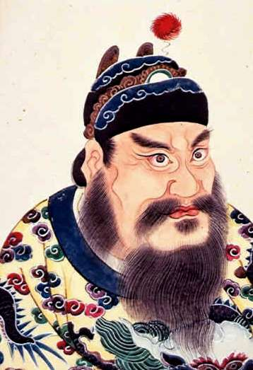

怎样在历史条件和证据范围内评价秦始皇的贡献、责任与局限？ 课程正文审阅稿，独立历史审校已完成，教学审校已完成。当前未提供有声动态图版或成片，以下内容可以离线阅读。
已学习秦统一主课的普通高中学生 · 必修内容基础上的人物评价专题；方法参照选修活动，不新增必修考核要求 · 限定统一、国家治理和统治责任三个维度，区分主张、行动、结果以及短期/长期影响；不采用功过比例总标签
学习目标 依据所给史料，区分秦始皇个人行动、制度安排及时代条件的作用，并据此说明秦统一和治理对统一多民族封建国家建立的意义。 在梳理人物事迹和时代环境的基础上，以史料为依据全面、客观地评价历史人物，并清楚说明判断的范围。 前置课程：秦为什么能完成统一，统一后如何治理，为什么迅速崩溃？

秦始皇像：18世纪后世画像，非秦代写实肖像 来源：清代佚名画家；Commons条目记录，Commons该文件条目的作者、来源、年代与公版说明。Wikimedia Commons条目标记Public Domain Mark；使用该条目文件，保留后世画像说明 秦始皇去世以后 秦亡时，人们仍会谈到他 公元前210年秦始皇去世以后，回看秦朝兴衰
秦朝灭亡的时候，秦始皇已经去世。可是谈起这个王朝的兴衰，人们仍很难绕过他的名字。
他与完成统一、推广郡县、推动共同规则联系在一起，也与大规模工程、繁重征发和严苛刑法联系在一起。前一组事实，说明了他改变历史的分量；后一组事实，则把统治责任带到了眼前。
这两组事实属于同一段历史。要理解秦始皇，就得追问：哪些变化同他的选择有关，哪些力量早在他之前已经形成，而他的统治又给不同的人带来了什么？
材料依据：国家平台《中外历史纲要（上）》第3课；《封建论》材料；《过秦论》材料；秦始皇像：18世纪后世画像，非秦代写实肖像；讀通鑒論/卷01；史記/卷006；《秦都咸阳城石甲胄作坊遗址试掘简报》（陕西省考古研究院，《中原文物》2024年第1期，第22–35页）；《秦始皇帝陵一号兵马俑陪葬坑发掘报告（2009—2011年）》内容提要与目录（个人意志经由工程与制度留下物质痕迹）；《睡虎地秦简·徭律》与《睡虎地秦简·司空》（秦代服役与工程管理的成文规定）；秦始皇帝陵博物院官网《遗址·一号坑》页（1974年发现经过与坑体尺度）；Wikimedia Commons：秦咸阳宫出土铜门铺首（局部）；Wikimedia Commons：秦咸阳宫遗址博物馆（门址）；《汉书》卷三十一《陈胜项籍传》（陈胜以"公子扶苏、项燕"为号召；项羽坑秦卒与分封诸侯）；《史记》卷八十八《蒙恬列传》（蒙恬与扶苏、蒙恬与赵高的线索）；《史记》卷八十六《刺客列传》（荆轲刺秦王："秦王之遇燕太子丹不善，故丹怨而亡归"）；《史记》卷八十七《李斯列传》（逐客令的决策过程；李斯自身亦在被逐之列）；《史记》卷六《秦始皇本纪》赞曰（"岂世世贤哉？其势居然也"）；《史记》卷六《秦始皇本纪》赞曰（司马迁笔下的秦始皇形象）；《史记》卷六十八《商君列传》（制度的先行者与商鞅个人作为对照）；《史记》卷十六《秦楚之际月表》末行（"赵高反，二世自杀，高立二世兄子婴。子婴立，刺杀高，夷三族。诸侯入秦，婴降，为项羽所杀"）；史記/卷006；卜宪群：中国社会科学院古代史研究所研究员履历页（含《秦汉官僚制度》等著作）；李学勤《东周与秦代文明》（文物出版社，1984年）；齐继伟《秦汉"徭"制补说》（制度经由"都发/县请"的行政层级落地，个人意志不能直接下达）；王国维《古史新证》（清华大学出版社，1994年）；讀通鑒論/卷01；贾谊《过秦论》中篇（"仁义不施而攻守之势异也"）与《史记》卷六赞曰（"三主惑而终身不悟"）
他继承了什么，又选择了什么 一道逐客令，怎样改变国家的力量 统一以前：嬴政的逐客决定与纳谏
嬴政接过的秦国，已经走过一段很长的路。变法形成的制度、长期积累的资源、人才和战争动员能力，为统一准备了条件。一个人的作用，便发生在这些已有条件之中。
逐客令提供了一个具体的观察入口。嬴政曾决定驱逐来自其他诸侯国的人，李斯上书反对，指出逐客可能帮助敌国、削弱秦自身。嬴政接受劝谏，改变了原来的主张。
这里既能看到人才对国家的重要，也能看到最高统治者的选择怎样影响人才的去留。已有的实力需要人去运用，一项政策也可能把它耗损。
因此，评价嬴政领导完成统一的作用，应当同时看见他所依靠的秦国、官员和众多参与者。这样才能说清个人作出了什么贡献，而不是把整个时代的成果都压在一个人的名字上。
材料依据：国家平台《中外历史纲要（上）》第3课；《谏逐客书》材料；諫逐客書；睡虎地秦簡/田律；史記/卷008；史記/卷022；史記/卷029；史記/卷087；商君書/卷一；商君書/卷二；《秦始皇帝陵一号兵马俑陪葬坑发掘报告（2009—2011年）》内容提要与目录（个人意志经由工程与制度留下物质痕迹）；《史记》卷八十六《刺客列传》（荆轲刺秦王："秦王之遇燕太子丹不善，故丹怨而亡归"）；《史记》卷八十七《李斯列传》（逐客令的决策过程；李斯自身亦在被逐之列）；《史记》卷六《秦始皇本纪》赞曰（"岂世世贤哉？其势居然也"）；《史记》卷六十八《商君列传》（制度的先行者与商鞅个人作为对照）；卜宪群：中国社会科学院古代史研究所研究员履历页（含《秦汉官僚制度》等著作）；齐继伟《秦汉"徭"制补说》（制度经由"都发/县请"的行政层级落地，个人意志不能直接下达）；《睡虎地秦简·法律答问》（官府对律条疑难问题的正式解答与"御史"问责程序）；陈伟主编《秦简牍合集·释文注释修订本（壹）》（武汉大学出版社，2016年）；睡虎地秦簡/田律；王德宇、谢坤《里耶秦简缀合表（壹—叁）》；王家台秦简《政事之常》（上海博物馆藏，1993年公布）；岳麓秦简《为吏治官及黔首》（释文与整理本著录）；Wikimedia Commons：里耶秦代简牍；Wikimedia Commons：秦代铜权「元年诏版」拓片（原件藏日本京都ゆうりん館）；《韩非子·定法》《韩非子·五蠹》；《史记》卷二十九《河渠书》（郑国渠——逐客事件的直接起因）；《史记》卷六《秦始皇本纪》「十年」条（逐客令与谏逐客书）；《史记》卷一百二十二《酷吏列传》序（"法令者治之具，而非制治清浊之源也"）；諫逐客書；李斯《谏逐客书》全文（维基文库《諫逐客書》）；商君書/卷二；商君書/卷一；史記/卷008；史記/卷022；史記/卷029；史記/卷087；《高山鼓乘：睡虎地秦墓竹简出土五十周年研究文选（全二册）》；陈阳《秦汉时期"爰书"考》，《贵州文史丛刊》2024年第2期（总第189期），第41页起；何有祖《里耶秦简新研》（上海古籍出版社，2024年）；《史记》卷十五《六国年表》序（"论秦之德义不如鲁卫之暴戾者，量秦之兵不如三晋之彊也，然卒并天下，非必险固便形势利也"）
一种制度，两层评价 柳宗元为什么要把两件事分开说 秦代的制度整合，以及唐代柳宗元的后世评论
统一之后，秦把郡县制推广到全国，地方主要官员由中央任免和考核；文字、货币和度量衡等共同规则，也推动了跨地区的联系。这些变化，成为评价秦始皇政治整合作用的重要依据。
然而，制度产生了历史作用，并不意味着统治者的目的与制度的影响完全相同。
唐代柳宗元讨论秦制时，一面谈秦始皇扩张个人权威的“私”，一面又说“公天下之端自秦始”。他把统治者的目的，同制度改变的作用分开来看。这样的区分，容得下更复杂的历史评价。
柳宗元是在后世讨论政治问题。他对秦始皇目的的解释，仍是后人的判断，并非秦始皇本人的自述。我们能够从这段话中得到一种分析思路，却不能据此断言已经看透了古人的内心。
材料依据：国家平台《中外历史纲要（上）》第3课；《封建论》材料；封建論 (柳宗元)；韓非子/定法；韓非子/五蠹；韓非子；漢書/卷019；郡縣論；睡虎地秦簡/法律答問；睡虎地秦簡/置吏律；隋書/卷29；文史通義/卷4；卜宪群：中国社会科学院古代史研究所研究员履历页（含《秦汉官僚制度》等著作）；《睡虎地秦简·法律答问》（官府对律条疑难问题的正式解答与"御史"问责程序）；《韩非子·定法》《韩非子·五蠹》；《史记》卷一百二十二《酷吏列传》序（"法令者治之具，而非制治清浊之源也"）；《高山鼓乘：睡虎地秦墓竹简出土五十周年研究文选（全二册）》；陈阳《秦汉时期"爰书"考》，《贵州文史丛刊》2024年第2期（总第189期），第41页起；《官印封泥中新见秦郡考》（《美术报》2011年2月26日第00035版）；《里耶秦简[贰]》（文物出版社，2017）——迁陵县公文档案的郡县运行样本；《睡虎地秦简·秦律杂抄》《睡虎地秦简·效律》（官员考核与考课的出土文本）；《睡虎地秦墓竹简》整理本条目级著录（篇目、简数与简号）；睡虎地秦簡/法律答問；睡虎地秦簡/置吏律；秦始皇帝陵博物院官网《遗址》《一号坑》《藏品》页（官方考古图像与著录）；Wikimedia Commons：睡虎地秦墓竹简《效律》实物（现藏南通中国审计博物馆）；《汉书》卷十九《百官公卿表上》（"县令、长，皆秦官……皆秦制也"；乡亭里三级编制）；封建論 (柳宗元)；韓非子；韓非子/定法；韓非子/五蠹；漢書/卷019；柳宗元《封建论》全文；王夫之《读通鉴论》卷一〈秦始皇〉（"郡县之法，已在秦先"；"郡县之制，垂二千年而弗能改矣"）；章学诚《文史通义》卷六〈方志立三书议〉（"封建罢为郡县，今之方志，不得拟于古国史也"）；卜宪群《秦汉官僚制度》（社会科学文献出版社，2002年）；辛德勇《秦汉政区与边界地理研究》（中华书局，2009年）；阎步克《品位与职位——秦汉魏晋南北朝官阶制度研究》（中华书局，2023年）；《史记》卷六《秦始皇本纪》赞曰（"繁法严刑而天下振"）与《汉书》卷十九《百官公卿表上》（"明简易，随时宜也"）；郡縣論；隋書/卷29；王夫之《读通鉴论》卷一〈秦始皇〉（后世"功过"叙事的另一种范式）；文史通義/卷4
代价落在谁的身上 制度的影响，不能替代对民众处境的考察 秦始皇统治的社会代价及公元前210—前207年的后续变化
如果把目光从政治制度移到普通人的生活，评价还会出现另一组重要事实：大型工程需要征发劳力，沉重赋役挤压民众生活，严苛刑法又使矛盾更加尖锐。
讨论秦始皇的统治责任，必须具体看这些政策怎样实施、代价由谁承担。某项建设在后世继续发挥作用，并不能使当时的负担自动消失。
同样，秦亡也不是一个人去世时就已完成的结果。秦二世的统治、统治集团内部的矛盾和反秦力量的发展，都参与了后来的进程。秦始皇所留下的问题，应同继承者及其他行动者的责任分别考察。
这样，贡献和责任便都有了各自的事实依据。它们可以共同进入评价，无须把一方面的事实抹去，才能承认另一方面。
材料依据：国家平台《中外历史纲要（上）》第3课；漢書/卷022；漢書/卷028；日知錄/卷02；睡虎地秦簡/11號木牘；睡虎地秦簡/司空；睡虎地秦簡/效律；睡虎地秦簡/徭律；史記/卷007；史記/卷096；《睡虎地秦简·徭律》与《睡虎地秦简·司空》（秦代服役与工程管理的成文规定）；《汉书》卷三十一《陈胜项籍传》（陈胜以"公子扶苏、项燕"为号召；项羽坑秦卒与分封诸侯）；《史记》卷八十八《蒙恬列传》（蒙恬与扶苏、蒙恬与赵高的线索）；《史记》卷十六《秦楚之际月表》末行（"赵高反，二世自杀，高立二世兄子婴。子婴立，刺杀高，夷三族。诸侯入秦，婴降，为项羽所杀"）；齐继伟《秦汉"徭"制补说》（制度经由"都发/县请"的行政层级落地，个人意志不能直接下达）；贾谊《过秦论》中篇（"仁义不施而攻守之势异也"）与《史记》卷六赞曰（"三主惑而终身不悟"）；《睡虎地秦简·法律答问》（官府对律条疑难问题的正式解答与"御史"问责程序）；《韩非子·定法》《韩非子·五蠹》；《史记》卷一百二十二《酷吏列传》序（"法令者治之具，而非制治清浊之源也"）；《高山鼓乘：睡虎地秦墓竹简出土五十周年研究文选（全二册）》；陈阳《秦汉时期"爰书"考》，《贵州文史丛刊》2024年第2期（总第189期），第41页起；《里耶秦简[贰]》（文物出版社，2017）——迁陵县公文档案的郡县运行样本；《史记》卷六《秦始皇本纪》赞曰（"繁法严刑而天下振"）与《汉书》卷十九《百官公卿表上》（"明简易，随时宜也"）；湖北省荆州博物馆《荆州高台秦汉墓》（科学出版社，2000年，第222–229页）；刻铭瓦志「博昌居此（赀）□里不更余」与赵背户村修陵人墓地；里耶秦简牍校释小组《里耶秦简（叁）》选释（六）（含纪年简）；睡虎地秦簡/11號木牘；睡虎地秦簡/司空；睡虎地秦簡/效律；睡虎地秦簡/徭律；Wikimedia Commons：广西博物院「灵渠与秦的征服」展陈；Wikimedia Commons：灵渠（广西兴安）；Wikimedia Commons：秦陵铜车马（局部细节）；《史记》卷六《秦始皇本纪》二十六年、三十三年、三十四年及「始皇初即位」条（徭役与工程）；《史记》卷六《秦始皇本纪》沙丘之变与二世即位段（赵高、李斯矫诏立胡亥）；《资治通鉴》卷七《秦纪二·二世皇帝上》（沙丘矫诏与二世元年纪年）；漢書/卷022；漢書/卷028；史記/卷007；史記/卷096；蔡万进主编《里耶秦简编年考证》第二卷（广西师范大学出版社，2025年）；曹旅寧〈從嶽麓書院藏秦簡《為吏治官及黔首》看秦的速亡原因〉；卢闻弦《从一件刻铭瓦志看——秦陵背后被忽略的建设群体》（《检察日报》2026年5月29日第06版）；肖永明《讀嶽麓書院藏秦簡〈為吏治官及黔首〉劄記》（《中国史研究》2009年第3期）；张金光《战国秦社会经济形态新探》（商务印书馆，2013年，第342页）；日知錄/卷02
怎样理解他的历史分量 把两组事实放在一起 回顾秦代统治及其后续影响的历史评价
在统一和治理的范围内，秦始皇的历史地位，可以从他推动的政治整合及其后续影响来理解；他的统治责任，则需要回到征发、刑法和民众承受的代价来分析。
这份判断还要留出时代的位置：秦的实力由长期积累而来，统一依靠众多参与者，王朝崩溃也经历了秦始皇去世后的变化。个人的重要作用，正是在这些联系中变得清楚。
有人会更重视统一的长期影响，有人会把民众处境放在评价的中心。不同的重点可以展开讨论，前提是能够说明所依据的事实，并认真回应另一组材料。
秦始皇之所以值得反复讨论，恰恰在于这些成就、权力与代价集中在他的统治之中。把它们放回同一段历史，评价才会具有足够的分量。
材料依据：国家平台《中外历史纲要（上）》第3课；《封建论》材料；《过秦论》材料；讀通鑒論/卷02；顧亭林文集/1；過秦論/中；漢書/卷031；漢書/卷044；日知錄/卷03；史記/卷048；史記/卷071；文史通義/卷6；文史通義/卷8；《秦始皇帝陵一号兵马俑陪葬坑发掘报告（2009—2011年）》内容提要与目录（个人意志经由工程与制度留下物质痕迹）；《睡虎地秦简·徭律》与《睡虎地秦简·司空》（秦代服役与工程管理的成文规定）；《汉书》卷三十一《陈胜项籍传》（陈胜以"公子扶苏、项燕"为号召；项羽坑秦卒与分封诸侯）；《史记》卷八十八《蒙恬列传》（蒙恬与扶苏、蒙恬与赵高的线索）；《史记》卷八十六《刺客列传》（荆轲刺秦王："秦王之遇燕太子丹不善，故丹怨而亡归"）；《史记》卷六《秦始皇本纪》赞曰（"岂世世贤哉？其势居然也"）；《史记》卷六《秦始皇本纪》赞曰（司马迁笔下的秦始皇形象）；《史记》卷十六《秦楚之际月表》末行（"赵高反，二世自杀，高立二世兄子婴。子婴立，刺杀高，夷三族。诸侯入秦，婴降，为项羽所杀"）；贾谊《过秦论》中篇（"仁义不施而攻守之势异也"）与《史记》卷六赞曰（"三主惑而终身不悟"）；《史记》卷十五《六国年表》序（"论秦之德义不如鲁卫之暴戾者，量秦之兵不如三晋之彊也，然卒并天下，非必险固便形势利也"）；秦始皇帝陵博物院官网《遗址》《一号坑》《藏品》页（官方考古图像与著录）；王夫之《读通鉴论》卷一〈秦始皇〉（"郡县之法，已在秦先"；"郡县之制，垂二千年而弗能改矣"）；王夫之《读通鉴论》卷一〈秦始皇〉（后世"功过"叙事的另一种范式）；湖北省荆州博物馆《荆州高台秦汉墓》（科学出版社，2000年，第222–229页）；里耶秦简牍校释小组《里耶秦简（叁）》选释（六）（含纪年简）；Wikimedia Commons：秦陵铜车马（局部细节）；《史记》卷六《秦始皇本纪》沙丘之变与二世即位段（赵高、李斯矫诏立胡亥）；《资治通鉴》卷七《秦纪二·二世皇帝上》（沙丘矫诏与二世元年纪年）；蔡万进主编《里耶秦简编年考证》第二卷（广西师范大学出版社，2025年）；肖永明《讀嶽麓書院藏秦簡〈為吏治官及黔首〉劄記》（《中国史研究》2009年第3期）；秦始皇帝陵博物院官网《遗址·铜车马坑》页（1980年发掘经过与铜车马编组）；秦始皇帝陵博物院重要藏品条目：秦俑坑铺地砖（含「宫水」「左司空」戳印）；Wikimedia Commons 秦始皇像（18世纪后世画像，非秦代写实肖像）；Wikimedia Commons：秦跪射俑（考古实物）；Wikimedia Commons：秦陵铜车马（考古实物）；Wikimedia Commons：秦始皇像（19世纪绘画，非秦代写实肖像；英国图书馆藏）；過秦論/中；漢書/卷031；漢書/卷044；史記/卷071；史記/卷048；曹旅寧〈說嶽麓書院藏秦簡《為吏治官及黔首》性質〉；孙正军《历代帝王图的诞生》（上海古籍出版社，2025年）；讀通鑒論/卷02；顧亭林文集/1；日知錄/卷03；文史通義/卷6；文史通義/卷8
学习任务与反馈 任务1 依据资料卡和两段古文，在“统一和治理”范围内评价秦始皇。写明评价重点，用至少两项具体事实分别讨论个人作用与时代条件、贡献与统治责任；至少说明一篇后世政论能帮助分析什么、不能直接证明什么。最后回应一种与你重点不同的判断。不要求给出好坏总标签或功过百分比。
请提交：有观点—证据—推理—限定的短评；也可先列对照表再写结论。重点和措辞可以不同，证据与解释必须相关。
秦统一资料卡 秦统一资料卡（本项目编写；据国家平台现版教材第3课印刷15—19页改述）
秦统一资料卡 ，本项目编写。自编资料卡全篇。本项目原创教学资料，可随课程资源公开 核阅范围：全文；据已读教材改述，不冒称秦代原始文书 原始出处 阅读材料文件
《封建论》材料 后世评价材料
《封建论》材料 ，柳宗元；本项目编注。教材印刷16页柳宗元引文（经教材转引）。古代原文公版，本项目说明原创 核阅范围：已读教材所引部分及本项目说明；未核古籍全文 原始出处 阅读材料文件
《过秦论》材料 汉初反思材料
《过秦论》材料 ，贾谊；本项目编注。教材印刷18页贾谊引文（经教材转引）。古代原文公版，本项目说明原创 核阅范围：已读教材所引部分及本项目说明；未核古籍全文 原始出处 阅读材料文件
完成后查看参考作答与评价量规 参考作答 若以统一和治理为范围，秦始皇领导完成统一并推动郡县和共同规则，对国家整合有重要作用；这些行动依靠秦长期积累的制度、资源和众多参与者，不能全部归于个人。大型工程、繁重征发和严刑激化矛盾，应纳入其统治责任。柳宗元的评论提示目的与制度影响可以分开分析，但作为唐代政论，不能直接证明秦始皇的内心动机。秦亡还涉及继承者与反秦力量，不能用王朝寿命代替全部评价。
评价标准 明确评价领域与时段 区分个人选择、制度及时代条件 以具体证据说明贡献和责任 辨认材料形成情境及证据边界 回应可能的不同重点 需要哪些证据 资料卡至少两项具体事实 柳宗元或贾谊至少一处材料用于支持或限制解释 至少说明一个后世政论不能直接证明的问题 表现层次 充分：范围明确，证据具体，有反面回应与来源限定 基本：贡献和责任均有事实，解释与边界略欠完整 发展中：有事实但多为赞否标签，忽略时代条件或反面材料 待改进：结论无证据，或把后世作者的话当秦始皇现场言行 合理异答 可以将统一贡献或社会代价作为主要重点，只要范围清楚并回应相反事实 可以批评材料解释不充分，不要求接受某篇政论作为最终结论 允许不同结论和措辞，不接受没有证据的功过比例 常见误解 “千古一帝”或“暴君”标签替代论证 将古文评论直接当本人动机证据 贡献自动抵消责任，或王朝速亡否定所有影响 教师使用说明 先修秦统一主课。建议约30—40分钟：复述基本事实与评价范围（5分钟），比较柳宗元和贾谊材料的形成情境及用途（8—10分钟），独立完成评价任务后用量规互评（12—15分钟），讨论两个重点不同但有证据的结论（5—8分钟）。不组织无范围的好坏投票，不以“千古一帝”“暴君”标签或功过百分比替代论证。教师追问证据能证明什么、反面材料怎样处理、个人与条件怎样分配解释责任。人物方法迁移来自选修活动，不新增必修点名考核。
本修订补入独立核阅的补充史料（原典、考古与出土文献、图像、学术研究与工具书），每个纲要要点至少两条且类型不同；教材转引仍显式标注并保留限制。
本修订使用已登记池、研究子代理池与两轮扩充池去重合并后的最终史料池（原典、考古与出土文献、图像、学术研究、工具书与二手争议）：每个纲要要点至少两条且类型不同；教材转引仍显式标注并保留限制。睡虎地秦简只用整理本条目级著录，维基文库残页不作条文出处；仅题录与授权待核条目标注未核正文，不作条文依据。
材料与出处 教材转引 国家平台《中外历史纲要（上）》第3课 ，人民教育出版社。印刷15—19页；PDF22—26页（经教材转引）。仅学习核阅与自主改述，不复制教材扫描图或现代正文 核阅范围：本轮在已登录平台实际读第3课正文及史料栏；地图只核文字标注；未逐字核古籍全文 原始出处 《封建论》材料 ，柳宗元；本项目编注。教材印刷16页柳宗元引文（经教材转引）。古代原文公版，本项目说明原创 核阅范围：已读教材所引部分及本项目说明；未核古籍全文 原始出处 阅读材料文件 《过秦论》材料 ，贾谊；本项目编注。教材印刷18页贾谊引文（经教材转引）。古代原文公版，本项目说明原创 核阅范围：已读教材所引部分及本项目说明；未核古籍全文 原始出处 阅读材料文件 《谏逐客书》材料 ，李斯；司马迁记载；本项目编注。教材印刷15页《史记·李斯列传》引文（经教材转引）。古代原文公版，本项目说明原创 核阅范围：已读教材所引部分及本项目说明；未核古籍全文 原始出处 阅读材料文件 图像材料 秦始皇像：18世纪后世画像，非秦代写实肖像 ，清代佚名画家；Commons条目记录。Commons该文件条目的作者、来源、年代与公版说明。Wikimedia Commons条目标记Public Domain Mark；使用该条目文件，保留后世画像说明 核阅范围：独立researcher实际读Commons条目、ibiblio来源链；未找到/核阅大英图书馆直接馆藏记录 原始出处 阅读材料文件 Wikimedia Commons：秦咸阳宫出土铜门铺首（局部） ，Gary Todd。Wikimedia Commons, File:Bronze Door Knocker, Qin Palace, Xianyang (detail).jpg（图像说明：秦宫铜门铺首局部，图注注明系自另一文件裁切）。授权状态：明确（CC BY-SA 4.0（作者 Gary Todd）；可公开引用，须署名并以相同许可发布。） 核阅范围：通过 Commons API 读取 extmetadata（作者 Gary Todd、日期 2023-10-26、许可 CC BY-SA 4.0、图说「Bronze Door Knocker, Qin Palace, Xianyang (detail)」），并在 Commons 文件页核对；未自行拍摄。 原始出处 Wikimedia Commons：秦咸阳宫遗址博物馆（门址） ，Baomi（Wikimedia Commons 用户）。Wikimedia Commons, File:Qin Xianyang Palace Site Museum.jpg（图像说明：秦咸阳宫遗址博物馆大门）。授权状态：明确（CC BY-SA 4.0（作者 Baomi）；可公开引用，须署名并以相同许可发布。） 核阅范围：通过 Wikimedia Commons API 读取该文件 extmetadata（作者 Baomi、日期 2023-06-01、许可 CC BY-SA 4.0、图说「秦咸阳宫遗址博物馆大门」），并在 Commons 文件页核对；未自行拍摄。 原始出处 Wikimedia Commons：里耶秦代简牍 ，Urga。Wikimedia Commons, File:里耶秦簡.jpg（图像说明：里耶秦代簡牘）。授权状态：明确（CC BY-SA 4.0（作者 Urga）；可公开引用，须署名并以相同许可发布。） 核阅范围：通过 Commons API 读取 extmetadata（作者 Urga、日期 2019-09-22、许可 CC BY-SA 4.0、图说「里耶秦代簡牘」），并在 Commons 文件页核对；未自行拍摄。 原始出处 Wikimedia Commons：秦代铜权「元年诏版」拓片（原件藏日本京都ゆうりん館） ，ReijiYamashina777。Wikimedia Commons, File:Edict bronze standard weight Qin dynasty.jpg（图像说明：秦代铜权第一条诏令拓片，约公元前221年；原件藏日本京都ゆうりん館，拓片于20世纪初在北京制作）。授权状态：明确（CC0（公有领域奉献）；可公开引用，无需署名（建议保留作者与出处）。） 核阅范围：通过 Commons API 读取 extmetadata（作者 ReijiYamashina777、日期 2010-03-28、许可 CC0、图说含上述年代与收藏信息）；未自行拍摄，未见原件实物。 原始出处 秦始皇帝陵博物院官网《遗址》《一号坑》《藏品》页（官方考古图像与著录） ，秦始皇帝陵博物院。秦始皇帝陵博物院官网 https://www.bmy.com.cn/relic.html ；/pitone.html ；/collection.html。授权状态：明确（官方网站公开页面；仅作教学引用与核验记录，不转载文物扫描图） 核阅范围：内置浏览器实际打开三页并读取正文与图片说明；已保存整页截图 t21-02-bmy-relic.png、t21-03-bmy-pitone.png（t21-03 待补，见 readback-log）。具体图像仅作目录与说明级核验，未做逐件文物著录比对。 原始出处 Wikimedia Commons：睡虎地秦墓竹简《效律》实物（现藏南通中国审计博物馆） ，猫猫的日记本（Wikimedia Commons 用户）。Wikimedia Commons, File:Bamboo Slips of Qin Dynasty Unearthed from Shuihudi 2013-01.JPG（图像说明：《效律》部分条文，1975年出土于湖北省云梦县睡虎地秦墓，现藏南通中国审计博物馆）。授权状态：明确（CC BY-SA 3.0（作者「猫猫的日记本」）；可公开引用，须署名并以相同许可发布。） 核阅范围：通过 Commons API 读取 extmetadata（作者「猫猫的日记本」、日期 2013-01-02、许可 CC BY-SA 3.0、图说含《效律》篇名、出土地与现藏馆）；未自行拍摄。 原始出处 Wikimedia Commons：广西博物院「灵渠与秦的征服」展陈 ，Gary Todd（from Xinzheng, China）。Wikimedia Commons, File:Lingqu Canal and Qin Conquest (10081811575).jpg（图注：Guangxi Provincial Museum, Nanning）。授权状态：明确（CC0（公有领域奉献）；可公开引用。） 核阅范围：通过 Commons API 读取 extmetadata（作者 Gary Todd、日期 2011-03-17、许可 CC0、图注「Guangxi Provincial Museum, Nanning」）；未自行拍摄。 原始出处 Wikimedia Commons：灵渠（广西兴安） ，Farm。Wikimedia Commons, File:Lingqu Canal.jpg（图像说明：Lingqu Canal）。授权状态：明确（CC BY 3.0（作者 Farm）；可公开引用，须署名。） 核阅范围：通过 Commons API 读取 extmetadata（作者 Farm、日期 2009-05-23、许可 CC BY 3.0、图说「Lingqu Canal」）；未自行拍摄。 原始出处 Wikimedia Commons：秦陵铜车马（局部细节） ，Gary Todd。Wikimedia Commons, File:2011 Qin Shihuang Bronze Chariot Horses a.jpg。授权状态：明确（CC0（公有领域奉献）；可公开引用。） 核阅范围：通过 Commons API 读取 extmetadata（作者 Gary Todd、日期 2011-03-13、许可 CC0）；未自行拍摄。 原始出处 Wikimedia Commons 秦始皇像（18世纪后世画像，非秦代写实肖像） ，清代佚名画家；Wikimedia Commons。File:Qin shihuangdi c01s06i06.jpg，Wikimedia Commons，清代佚名画家，18世纪，条目记为大英图书馆来源，Public Domain Mark。授权状态：明确（Public Domain Mark（前轮核阅）；保留后世画像说明，不得作秦始皇相貌证据）（材料状态：待核实或有分歧） 核阅范围：本轮未重新打开该 Commons 条目；沿用本项目前轮（2026-10-28）核阅记录（evidence/p1/sources/portrait.json、data/project.json Source qin-portrait）。作为"后世建构"的教学材料，其"后世性"本身即为论证要点。（仅题录/摘要，未读原文）（材料状态：待核实或有分歧） 原始出处 Wikimedia Commons：秦跪射俑（考古实物） ，Gary Todd（from Xinzheng, China）。Wikimedia Commons, File:Qin Terracotta Kneeling Archer (9893941883).jpg（图像说明：Qin Terracotta Kneeling Archer）。授权状态：明确（CC0（公有领域奉献）；可公开引用。） 核阅范围：通过 Commons API 读取 extmetadata（作者 Gary Todd、日期 2011-03-13、许可 CC0、图说「Qin Terracotta Kneeling Archer」）；未自行拍摄。图像与秦始皇帝陵博物院官方著录「秦跪射俑……出土于秦兵马俑二号坑东端的弩兵阵中心」相互印证，但陶俑是军阵造像，不是任何个人的肖像。 原始出处 Wikimedia Commons：秦陵铜车马（考古实物） ，Gary Todd。Wikimedia Commons, File:2011 Qin Shihuang Bronze Chariot Horses.jpg（图像说明：2011 Qin Shihuang Bronze Chariot Horses）。授权状态：明确（CC0（公有领域奉献）；可公开引用。） 核阅范围：通过 Commons API 读取 extmetadata（作者 Gary Todd、日期 2011-03-13、许可 CC0、图说「2011 visit」）；未自行拍摄。 原始出处 Wikimedia Commons：秦始皇像（19世纪绘画，非秦代写实肖像；英国图书馆藏） ，Unknown author（藏品机构：The British Library；摄影：The British Library Board）。Wikimedia Commons, File:Qin Shi Huang.jpg；英国图书馆索书号 Or. 11515, f.11v。文件页图说为「Qin Shi Huang, first emperor of China. Qin dynasty (221-210 B.C.), Colour portrait.」。授权状态：明确（公有领域（Public domain，来源：The British Library）；可公开引用，建议注明馆藏与索书号。） 核阅范围：在浏览器中实际打开 Commons 文件页，读到：Date「19th century」、Source「The British Library」、Author「Unknown author」、版权方「© The British Library Board」、许可「公有领域（PD-old-100-expired，系对公有领域二维美术作品的忠实摄影复制）」、图片尺寸1279×2000，并读到文件页将主题年代与作品年代混排的图说写法。该图为19世纪（清代后期）绘制的秦始皇像，不是秦代写实肖像，不得用来证明秦始皇的容貌或心理。 原始出处 二手研究与争议 讀通鑒論/卷01 ，佚名/编者待补。讀通鑒論/卷01（zh.wikisource.org 公开电子文本）。教学引用；公开发布前复核版权与授权 核阅范围：已读该条目抓取到的正文共 3742 字符（原始响应留在 raw/dtjl-01.json）；公开电子转录本，未与纸本/中华书局本校勘本核对 原始出处 讀通鑒論/卷02 ，佚名/编者待补。讀通鑒論/卷02（zh.wikisource.org 公开电子文本）。教学引用；公开发布前复核版权与授权 核阅范围：已读该条目抓取到的正文共 20840 字符（原始响应留在 raw/dtjl-02.json）；公开电子转录本，未与纸本/中华书局本校勘本核对 原始出处 顧亭林文集/1 ，顾炎武（清）《顾亭林文集》。顧亭林文集/1（zh.wikisource.org 公开电子文本）。教学引用；公开发布前复核版权与授权 核阅范围：已读该条目抓取到的正文共 567 字符（原始响应留在 raw/gtlw-1.json）；公开电子转录本，未与纸本/中华书局本校勘本核对 原始出处 郡縣論 ，赵翼（清）《郡县论》。郡縣論（zh.wikisource.org 公开电子文本）。教学引用；公开发布前复核版权与授权 核阅范围：已读该条目抓取到的正文共 363 字符（原始响应留在 raw/jvxianlun.json）；公开电子转录本，未与纸本/中华书局本校勘本核对 原始出处 日知錄/卷02 ，顾炎武（清）《日知录》。日知錄/卷02（zh.wikisource.org 公开电子文本）。教学引用；公开发布前复核版权与授权 核阅范围：已读该条目抓取到的正文共 19647 字符（原始响应留在 raw/rizhilu-02.json）；公开电子转录本，未与纸本/中华书局本校勘本核对 原始出处 日知錄/卷03 ，顾炎武（清）《日知录》。日知錄/卷03（zh.wikisource.org 公开电子文本）。教学引用；公开发布前复核版权与授权 核阅范围：已读该条目抓取到的正文共 13848 字符（原始响应留在 raw/rizhilu-03.json）；公开电子转录本，未与纸本/中华书局本校勘本核对 原始出处 隋書/卷29 ，魏徵等（唐）《隋书》。隋書/卷29（zh.wikisource.org 公开电子文本）。教学引用；公开发布前复核版权与授权 核阅范围：已读该条目抓取到的正文共 18992 字符（原始响应留在 raw/suishu-29.json）；公开电子转录本，未与纸本/中华书局本校勘本核对 原始出处 文史通義/卷4 ，章学诚（清）《文史通义》。文史通義/卷4（zh.wikisource.org 公开电子文本）。教学引用；公开发布前复核版权与授权 核阅范围：已读该条目抓取到的正文共 29849 字符（原始响应留在 raw/wsy-4.json）；公开电子转录本，未与纸本/中华书局本校勘本核对 原始出处 文史通義/卷6 ，章学诚（清）《文史通义》。文史通義/卷6（zh.wikisource.org 公开电子文本）。教学引用；公开发布前复核版权与授权 核阅范围：已读该条目抓取到的正文共 31772 字符（原始响应留在 raw/wsy-6.json）；公开电子转录本，未与纸本/中华书局本校勘本核对 原始出处 文史通義/卷8 ，章学诚（清）《文史通义》。文史通義/卷8（zh.wikisource.org 公开电子文本）。教学引用；公开发布前复核版权与授权 核阅范围：已读该条目抓取到的正文共 33173 字符（原始响应留在 raw/wsy-8.json）；公开电子转录本，未与纸本/中华书局本校勘本核对 原始出处 讀通鑒論/卷01 ，佚名/编者待补。讀通鑒論/卷01（zh.wikisource.org 公开电子文本）。古代原文公版；本条引自维基文库公开电子转录本（CC BY-SA 4.0），非权威版本，引用须回到纸本/官方出版物核对。 核阅范围：已读该条目抓取到的正文共 3742 字符（原始响应留在 raw/dtjl-01.json）；公开电子转录本，未与纸本/中华书局本校勘本核对 原始出处 贾谊《过秦论》中篇（"仁义不施而攻守之势异也"）与《史记》卷六赞曰（"三主惑而终身不悟"） ，［汉］贾谊；［汉］司马迁。［汉］贾谊《过秦论》中篇；［汉］司马迁《史记》卷六赞曰；维基文库《過秦論/中》《史記/卷006》。古代原文公版；引自维基文库转录本（CC BY-SA 4.0），非纸本 核阅范围：两处均已实际打开并读到原文：《过秦论》中篇"仁义不施而攻守之势异也"；《史记》卷六赞曰"三主惑而终身不悟，亡，不亦宜乎"。二者归因不同：前者重"守"之方略，后者重"三主"的失道与壅蔽。 原始出处 《史记》卷十五《六国年表》序（"论秦之德义不如鲁卫之暴戾者，量秦之兵不如三晋之彊也，然卒并天下，非必险固便形势利也"） ，［汉］司马迁。［汉］司马迁《史记》卷十五〈六国年表〉序；维基文库页《史記/卷015》。古代原文公版；引自维基文库转录本（CC BY-SA 4.0），非纸本 核阅范围：实际打开《史記/卷015》并读取年表序全文；上述引文为序中原文，另读到"秦取天下多暴，然世异变，成功大"。 原始出处 《史记》卷六《秦始皇本纪》赞曰（"繁法严刑而天下振"）与《汉书》卷十九《百官公卿表上》（"明简易，随时宜也"） ，［汉］司马迁；［汉］班固。［汉］司马迁《史记》卷六赞曰；［汉］班固《汉书》卷十九〈百官公卿表〉；维基文库《史記/卷006》《漢書/卷019》。古代原文公版；引自维基文库转录本（CC BY-SA 4.0），非纸本 核阅范围：两条均已实际打开并读到原文："秦之盛也，繁法严刑而天下振；及其衰也，百姓怨望而海内畔矣"；"秦兼天下，建皇帝之号，立百官之职。汉因循而不革，明简易，随时宜也"。 原始出处 郡縣論 ，赵翼（清）《郡县论》。郡縣論（zh.wikisource.org 公开电子文本）。古代原文公版；本条引自维基文库公开电子转录本（CC BY-SA 4.0），非权威版本，引用须回到纸本/官方出版物核对。 核阅范围：已读该条目抓取到的正文共 363 字符（原始响应留在 raw/jvxianlun.json）；公开电子转录本，未与纸本/中华书局本校勘本核对 原始出处 隋書/卷29 ，魏徵等（唐）《隋书》。隋書/卷29（zh.wikisource.org 公开电子文本）。古代原文公版；本条引自维基文库公开电子转录本（CC BY-SA 4.0），非权威版本，引用须回到纸本/官方出版物核对。 核阅范围：已读该条目抓取到的正文共 18992 字符（原始响应留在 raw/suishu-29.json）；公开电子转录本，未与纸本/中华书局本校勘本核对 原始出处 王夫之《读通鉴论》卷一〈秦始皇〉（后世"功过"叙事的另一种范式） ，［清］王夫之。［清］王夫之《读通鉴论》卷一〈秦始皇〉一；维基文库页《讀通鑒論/卷01》。古代原文公版；引自维基文库转录本（CC BY-SA 4.0），非纸本 核阅范围：实际打开并读取该卷 wikitext（约3700字）；读到"郡县之法，已在秦先"及关于郡县与选举关系的整段论述。 原始出处 文史通義/卷4 ，章学诚（清）《文史通义》。文史通義/卷4（zh.wikisource.org 公开电子文本）。古代原文公版；本条引自维基文库公开电子转录本（CC BY-SA 4.0），非权威版本，引用须回到纸本/官方出版物核对。 核阅范围：已读该条目抓取到的正文共 29849 字符（原始响应留在 raw/wsy-4.json）；公开电子转录本，未与纸本/中华书局本校勘本核对 原始出处 日知錄/卷02 ，顾炎武（清）《日知录》。日知錄/卷02（zh.wikisource.org 公开电子文本）。古代原文公版；本条引自维基文库公开电子转录本（CC BY-SA 4.0），非权威版本，引用须回到纸本/官方出版物核对。 核阅范围：已读该条目抓取到的正文共 19647 字符（原始响应留在 raw/rizhilu-02.json）；公开电子转录本，未与纸本/中华书局本校勘本核对 原始出处 讀通鑒論/卷02 ，佚名/编者待补。讀通鑒論/卷02（zh.wikisource.org 公开电子文本）。古代原文公版；本条引自维基文库公开电子转录本（CC BY-SA 4.0），非权威版本，引用须回到纸本/官方出版物核对。 核阅范围：已读该条目抓取到的正文共 20840 字符（原始响应留在 raw/dtjl-02.json）；公开电子转录本，未与纸本/中华书局本校勘本核对 原始出处 顧亭林文集/1 ，顾炎武（清）《顾亭林文集》。顧亭林文集/1（zh.wikisource.org 公开电子文本）。古代原文公版；本条引自维基文库公开电子转录本（CC BY-SA 4.0），非权威版本，引用须回到纸本/官方出版物核对。 核阅范围：已读该条目抓取到的正文共 567 字符（原始响应留在 raw/gtlw-1.json）；公开电子转录本，未与纸本/中华书局本校勘本核对 原始出处 日知錄/卷03 ，顾炎武（清）《日知录》。日知錄/卷03（zh.wikisource.org 公开电子文本）。古代原文公版；本条引自维基文库公开电子转录本（CC BY-SA 4.0），非权威版本，引用须回到纸本/官方出版物核对。 核阅范围：已读该条目抓取到的正文共 13848 字符（原始响应留在 raw/rizhilu-03.json）；公开电子转录本，未与纸本/中华书局本校勘本核对 原始出处 文史通義/卷6 ，章学诚（清）《文史通义》。文史通義/卷6（zh.wikisource.org 公开电子文本）。古代原文公版；本条引自维基文库公开电子转录本（CC BY-SA 4.0），非权威版本，引用须回到纸本/官方出版物核对。 核阅范围：已读该条目抓取到的正文共 31772 字符（原始响应留在 raw/wsy-6.json）；公开电子转录本，未与纸本/中华书局本校勘本核对 原始出处 文史通義/卷8 ，章学诚（清）《文史通义》。文史通義/卷8（zh.wikisource.org 公开电子文本）。古代原文公版；本条引自维基文库公开电子转录本（CC BY-SA 4.0），非权威版本，引用须回到纸本/官方出版物核对。 核阅范围：已读该条目抓取到的正文共 33173 字符（原始响应留在 raw/wsy-8.json）；公开电子转录本，未与纸本/中华书局本校勘本核对 原始出处 一手史料原典 封建論 (柳宗元) ，柳宗元（唐）《封建论》。封建論 (柳宗元)（zh.wikisource.org 公开电子文本）。教学引用；公开发布前复核版权与授权 核阅范围：已读该条目抓取到的正文共 2155 字符（原始响应留在 raw/fengjianlun-lz.json）；公开电子转录本，未与纸本/中华书局本校勘本核对 原始出处 過秦論/中 ，贾谊（《过秦论》）。過秦論/中（zh.wikisource.org 公开电子文本）。教学引用；公开发布前复核版权与授权 核阅范围：已读该条目抓取到的正文共 995 字符（原始响应留在 raw/guoqml-zhong.json）；公开电子转录本，未与纸本/中华书局本校勘本核对 原始出处 韓非子/定法 ，韩非（非子）。韓非子/定法（zh.wikisource.org 公开电子文本）。教学引用；公开发布前复核版权与授权 核阅范围：已读该条目抓取到的正文共 1110 字符（原始响应留在 raw/hanfei-dingfa.json）；公开电子转录本，未与纸本/中华书局本校勘本核对 原始出处 韓非子/五蠹 ，韩非（非子）。韓非子/五蠹（zh.wikisource.org 公开电子文本）。教学引用；公开发布前复核版权与授权 核阅范围：已读该条目抓取到的正文共 4933 字符（原始响应留在 raw/hanfei-wudu.json）；公开电子转录本，未与纸本/中华书局本校勘本核对 原始出处 韓非子 ，韩非（非子）。韓非子（zh.wikisource.org 公开电子文本）。教学引用；公开发布前复核版权与授权 核阅范围：已读该条目抓取到的正文共 1536 字符（原始响应留在 raw/hanfeizi.json）；公开电子转录本，未与纸本/中华书局本校勘本核对 原始出处 漢書/卷019 ，班固（《汉书》）。漢書/卷019（zh.wikisource.org 公开电子文本）。教学引用；公开发布前复核版权与授权 核阅范围：已读该条目抓取到的正文共 36324 字符（原始响应留在 raw/hanshu-019.json）；公开电子转录本，未与纸本/中华书局本校勘本核对 原始出处 漢書/卷022 ，班固（《汉书》）。漢書/卷022（zh.wikisource.org 公开电子文本）。教学引用；公开发布前复核版权与授权 核阅范围：已读该条目抓取到的正文共 9566 字符（原始响应留在 raw/hanshu-022.json）；公开电子转录本，未与纸本/中华书局本校勘本核对 原始出处 漢書/卷028 ，班固（《汉书》）。漢書/卷028（zh.wikisource.org 公开电子文本）。教学引用；公开发布前复核版权与授权 核阅范围：已读该条目抓取到的正文共 20423 字符（原始响应留在 raw/hanshu-028.json）；公开电子转录本，未与纸本/中华书局本校勘本核对 原始出处 漢書/卷031 ，班固（《汉书》）。漢書/卷031（zh.wikisource.org 公开电子文本）。教学引用；公开发布前复核版权与授权 核阅范围：已读该条目抓取到的正文共 11404 字符（原始响应留在 raw/hanshu-031.json）；公开电子转录本，未与纸本/中华书局本校勘本核对 原始出处 漢書/卷044 ，班固（《汉书》）。漢書/卷044（zh.wikisource.org 公开电子文本）。教学引用；公开发布前复核版权与授权 核阅范围：已读该条目抓取到的正文共 6968 字符（原始响应留在 raw/hanshu-044.json）；公开电子转录本，未与纸本/中华书局本校勘本核对 原始出处 諫逐客書 ，李斯（《谏逐客书》）。諫逐客書（zh.wikisource.org 公开电子文本）。教学引用；公开发布前复核版权与授权 核阅范围：已读该条目抓取到的正文共 2761 字符（原始响应留在 raw/jianquke.json）；公开电子转录本，未与纸本/中华书局本校勘本核对 原始出处 史記/卷006 ，司马迁（《史记》）。史記/卷006（zh.wikisource.org 公开电子文本）。教学引用；公开发布前复核版权与授权 核阅范围：已读该条目抓取到的正文共 16505 字符（原始响应留在 raw/shiji-006.json）；公开电子转录本，未与纸本/中华书局本校勘本核对 原始出处 史記/卷007 ，司马迁（《史记》）。史記/卷007（zh.wikisource.org 公开电子文本）。教学引用；公开发布前复核版权与授权 核阅范围：已读该条目抓取到的正文共 11463 字符（原始响应留在 raw/shiji-007.json）；公开电子转录本，未与纸本/中华书局本校勘本核对 原始出处 史記/卷008 ，司马迁（《史记》）。史記/卷008（zh.wikisource.org 公开电子文本）。教学引用；公开发布前复核版权与授权 核阅范围：已读该条目抓取到的正文共 12027 字符（原始响应留在 raw/shiji-008.json）；公开电子转录本，未与纸本/中华书局本校勘本核对 原始出处 史記/卷022 ，司马迁（《史记》）。史記/卷022（zh.wikisource.org 公开电子文本）。教学引用；公开发布前复核版权与授权 核阅范围：已读该条目抓取到的正文共 11673 字符（原始响应留在 raw/shiji-022.json）；公开电子转录本，未与纸本/中华书局本校勘本核对 原始出处 史記/卷029 ，司马迁（《史记》）。史記/卷029（zh.wikisource.org 公开电子文本）。教学引用；公开发布前复核版权与授权 核阅范围：已读该条目抓取到的正文共 2260 字符（原始响应留在 raw/shiji-029.json）；公开电子转录本，未与纸本/中华书局本校勘本核对 原始出处 史記/卷071 ，司马迁（《史记》）。史記/卷071（zh.wikisource.org 公开电子文本）。教学引用；公开发布前复核版权与授权 核阅范围：已读该条目抓取到的正文共 4301 字符（原始响应留在 raw/shiji-071.json）；公开电子转录本，未与纸本/中华书局本校勘本核对 原始出处 史記/卷087 ，司马迁（《史记》）。史記/卷087（zh.wikisource.org 公开电子文本）。教学引用；公开发布前复核版权与授权 核阅范围：已读该条目抓取到的正文共 9240 字符（原始响应留在 raw/shiji-087.json）；公开电子转录本，未与纸本/中华书局本校勘本核对 原始出处 史記/卷096 ，司马迁（《史记》）。史記/卷096（zh.wikisource.org 公开电子文本）。教学引用；公开发布前复核版权与授权 核阅范围：已读该条目抓取到的正文共 5040 字符（原始响应留在 raw/shiji-096.json）；公开电子转录本，未与纸本/中华书局本校勘本核对 原始出处 商君書/卷一 ，商鞅及商鞅学派（传世《商君书》）。商君書/卷一（zh.wikisource.org 公开电子文本）。教学引用；公开发布前复核版权与授权 核阅范围：已读该条目抓取到的正文共 5592 字符（原始响应留在 raw/sj-juan1.json）；公开电子转录本，未与纸本/中华书局本校勘本核对 原始出处 商君書/卷二 ，商鞅及商鞅学派（传世《商君书》）。商君書/卷二（zh.wikisource.org 公开电子文本）。教学引用；公开发布前复核版权与授权 核阅范围：已读该条目抓取到的正文共 4545 字符（原始响应留在 raw/sj-juan2.json）；公开电子转录本，未与纸本/中华书局本校勘本核对 原始出处 《汉书》卷三十一《陈胜项籍传》（陈胜以"公子扶苏、项燕"为号召；项羽坑秦卒与分封诸侯） ，［汉］班固。［汉］班固《汉书》卷三十一〈陈胜项籍传第一〉；维基文库页《漢書/卷031》。古代原文公版；引自维基文库转录本（CC BY-SA 4.0），非纸本 核阅范围：实际打开《漢書/卷031》并读取该卷 wikitext（约10100字）；读到"乃诈称公子扶苏、项燕，从民望也"、范增"楚虽三户，亡秦必楚"、项燕立楚怀王孙心等段。 原始出处 《史记》卷八十八《蒙恬列传》（蒙恬与扶苏、蒙恬与赵高的线索） ，［汉］司马迁。［汉］司马迁《史记》卷八十八〈蒙恬列传〉第二十八；维基文库页《史記/卷088》。古代原文公版；引自维基文库转录本（CC BY-SA 4.0），非纸本 核阅范围：实际打开《史記/卷088》并读取该卷 wikitext（约6400字）；读到长城、直道与三十万众北逐戎狄三处；并读到沙丘继承段"始皇至沙丘崩，秘之，群臣莫知。是时丞相李斯、公子胡亥、中车府令赵高常从……乃与丞相李斯、公子胡亥阴谋，立胡亥为太子。太子已立，遣使者以罪赐公子扶苏、蒙恬死"，以及赵高身世与秦王举赵高为中车府令的记载。扶苏手书原文尚未逐字摘录，标为待续核。 原始出处 《史记》卷八十六《刺客列传》（荆轲刺秦王："秦王之遇燕太子丹不善，故丹怨而亡归"） ，［汉］司马迁。［汉］司马迁《史记》卷八十六〈刺客列传〉第二十六；维基文库页《史記/卷086》。古代原文公版；引自维基文库转录本（CC BY-SA 4.0），非纸本 核阅范围：实际打开《史記/卷086》并读取该卷 wikitext（约7800字）；在〈荆轲〉篇读到太子丹质秦、"秦王之遇燕太子丹不善"、鞠武论秦国地势与"诸侯服秦，莫敢合从"、图穷匕首见等段。 原始出处 《史记》卷八十七《李斯列传》（逐客令的决策过程；李斯自身亦在被逐之列） ，［汉］司马迁。［汉］司马迁《史记》卷八十七〈李斯列传〉第二十七；维基文库页《史記/卷087》。古代原文公版；引自维基文库转录本（CC BY-SA 4.0），非纸本 核阅范围：实际打开《史記/卷087》并读取该卷 wikitext 全文（约26700字）；读到"李斯议亦在逐中"、逐客书衔接段、"秦王乃除逐客之令，复李斯官，卒用其计谋"，以及卷末李斯被诛与司马迁之议"人皆以斯极忠而被五刑死，察其本，乃与俗议之异"、【索隐述赞】"一夫诳惑，变易神器。国丧身诛，本同末异"。 原始出处 《史记》卷六《秦始皇本纪》赞曰（"岂世世贤哉？其势居然也"） ，［汉］司马迁。［汉］司马迁《史记》卷六〈秦始皇本纪〉赞曰；维基文库页《史記/卷006》。古代原文公版；引自维基文库转录本（CC BY-SA 4.0），非纸本 核阅范围：实际打开《史記/卷006》并读完整卷；赞曰读到"秦地被山带河以为固，四塞之国也。自缪公以来，至于秦王，二十余君，常为诸侯雄。岂世世贤哉？其势居然也"，以及"盖若天所助焉"（见卷十五年表序）。 原始出处 《史记》卷六《秦始皇本纪》赞曰（司马迁笔下的秦始皇形象） ，［汉］司马迁。［汉］司马迁《史记》卷六〈秦始皇本纪〉赞曰；维基文库页《史記/卷006》。古代原文公版；引自维基文库转录本（CC BY-SA 4.0），非纸本 核阅范围：实际打开并读完整卷；赞曰读到"始皇自以为功过五帝，地广三王，而羞与之侔。善哉乎贾生推言之也"与"子婴孤立无亲，危弱无辅""秦俗多忌讳之禁……天下已乱，奸不上闻，岂不哀哉"。 原始出处 《史记》卷六十八《商君列传》（制度的先行者与商鞅个人作为对照） ，［汉］司马迁。［汉］司马迁《史记》卷六十八〈商君列传〉第八；维基文库页《史記/卷068》。古代原文公版；引自维基文库转录本（CC BY-SA 4.0），非纸本 核阅范围：实际打开《史記/卷068》并读取该卷 wikitext（约3400字）全文；读到商鞅变法各条与列传收束部分。 原始出处 《史记》卷十六《秦楚之际月表》末行（"赵高反，二世自杀，高立二世兄子婴。子婴立，刺杀高，夷三族。诸侯入秦，婴降，为项羽所杀"） ，［汉］司马迁。［汉］司马迁《史记》卷十六〈秦楚之际月表〉第四；维基文库页《史記/卷016》。古代原文公版；引自维基文库转录本（CC BY-SA 4.0），非纸本 核阅范围：实际打开《史記/卷016》并读取该卷 wikitext（约19000字）；读到表末总括行全文。逐月条目未逐年核对。 原始出处 史記/卷006 ，司马迁（《史记》）。史記/卷006（zh.wikisource.org 公开电子文本）。古代原文公版；本条引自维基文库公开电子转录本（CC BY-SA 4.0），非权威版本，引用须回到纸本/官方出版物核对。 核阅范围：已读该条目抓取到的正文共 16505 字符（原始响应留在 raw/shiji-006.json）；公开电子转录本，未与纸本/中华书局本校勘本核对 原始出处 《韩非子·定法》《韩非子·五蠹》 ，［战国］韩非。［战国］韩非《韩非子·定法》《韩非子·五蠹》；维基文库页《韓非子/定法》《韓非子/五蠹》。古代原文公版；引自维基文库转录本（CC BY-SA 4.0），非纸本 核阅范围：实际打开两页并读取全文 wikitext（〈定法〉约970字、〈五蠹〉约4800字）：〈定法〉读到"君无择其臣，臣无适其受……"与法、术、势三者关系；〈五蠹〉读到"上古之世……以力假人者……今修文学，习言谈"及"明主之道，如有若夫应治乱之策，论功业之要"相关段落。 原始出处 《史记》卷二十九《河渠书》（郑国渠——逐客事件的直接起因） ，［汉］司马迁。［汉］司马迁《史记》卷二十九〈河渠书〉第八；维基文库页《史記/卷029》。古代原文公版；引自维基文库转录本（CC BY-SA 4.0），非纸本 核阅范围：实际打开《史記/卷029》并读该卷全文 wikitext；读到"郑国间说秦，令凿泾水自中山西邸瓠口为渠，并北山东注洛三百余里，欲以溉田"与"渠成亦秦之利也"。 原始出处 《史记》卷六《秦始皇本纪》「十年」条（逐客令与谏逐客书） ，［汉］司马迁。［汉］司马迁《史记》卷六《秦始皇本纪》「十年」条（维基文库《史記/卷006》转录本）。古代原文属公版；本条引自维基文库公开电子转录本（CC BY-SA 4.0），非权威版本，引用须回中华书局点校本核对。 核阅范围：实际打开维基文库《史記/卷006》并读到「十年」条全文：「十年，相國呂不韋坐嫪毐免……大索，逐客，李斯上書說，乃止逐客令。李斯因說秦王，請先取韓以恐他國，於是使斯下韓」；同条并读到大梁人尉缭说秦王一节（「秦王為人，蜂準，長目，摯鳥膺，豺聲，少恩而虎狼心……」）与「而李斯用事」。本条只取纪年条与相关段落，未读该卷赞曰（赞曰已由既有池登记）。转录本未与中华书局点校本校勘。 原始出处 《史记》卷一百二十二《酷吏列传》序（"法令者治之具，而非制治清浊之源也"） ，［汉］司马迁。［汉］司马迁《史记》卷一百二十二〈酷吏列传〉第六十二；维基文库页《史記/卷122》。古代原文公版；引自维基文库转录本（CC BY-SA 4.0），非纸本 核阅范围：实际打开《史記/卷122》并读取该卷 wikitext（约7700字），读到〈序〉全文（孔子"导之以政，齐之以刑，民免而无耻"、老子"法令滋章，盗贼多有"、以及"法令者治之具，而非制治清浊之源也"）与〈郅都〉〈寧成〉条目。该页所收酷吏以汉人为主，未定位到秦代酷吏记载，本条只作"法治与德治之辩"的古代论述使用。 原始出处 諫逐客書 ，李斯（《谏逐客书》）。諫逐客書（zh.wikisource.org 公开电子文本）。古代原文公版；本条引自维基文库公开电子转录本（CC BY-SA 4.0），非权威版本，引用须回到纸本/官方出版物核对。 核阅范围：已读该条目抓取到的正文共 2761 字符（原始响应留在 raw/jianquke.json）；公开电子转录本，未与纸本/中华书局本校勘本核对 原始出处 李斯《谏逐客书》全文（维基文库《諫逐客書》） ，［秦］李斯。［秦］李斯《谏逐客书》；维基文库页《諫逐客書》（《古文观止》系统节录本，与《史记》本段落有异）。古代原文公版；维基文库《古文观止》系统节录本（CC BY-SA 4.0），与《史记》本段落有异 核阅范围：实际打开并读取全文 wikitext（约900字），正文止于"今逐客以资敌国，损民以益仇，内自虚而外树怨于诸侯，求国无危，不可得也"；该页无秦王答复。段落与《史记·李斯列传》本不完全相同（页内注明已删两段）。 原始出处 商君書/卷二 ，商鞅及商鞅学派（传世《商君书》）。商君書/卷二（zh.wikisource.org 公开电子文本）。古代原文公版；本条引自维基文库公开电子转录本（CC BY-SA 4.0），非权威版本，引用须回到纸本/官方出版物核对。 核阅范围：已读该条目抓取到的正文共 4545 字符（原始响应留在 raw/sj-juan2.json）；公开电子转录本，未与纸本/中华书局本校勘本核对 原始出处 商君書/卷一 ，商鞅及商鞅学派（传世《商君书》）。商君書/卷一（zh.wikisource.org 公开电子文本）。古代原文公版；本条引自维基文库公开电子转录本（CC BY-SA 4.0），非权威版本，引用须回到纸本/官方出版物核对。 核阅范围：已读该条目抓取到的正文共 5592 字符（原始响应留在 raw/sj-juan1.json）；公开电子转录本，未与纸本/中华书局本校勘本核对 原始出处 史記/卷008 ，司马迁（《史记》）。史記/卷008（zh.wikisource.org 公开电子文本）。古代原文公版；本条引自维基文库公开电子转录本（CC BY-SA 4.0），非权威版本，引用须回到纸本/官方出版物核对。 核阅范围：已读该条目抓取到的正文共 12027 字符（原始响应留在 raw/shiji-008.json）；公开电子转录本，未与纸本/中华书局本校勘本核对 原始出处 史記/卷022 ，司马迁（《史记》）。史記/卷022（zh.wikisource.org 公开电子文本）。古代原文公版；本条引自维基文库公开电子转录本（CC BY-SA 4.0），非权威版本，引用须回到纸本/官方出版物核对。 核阅范围：已读该条目抓取到的正文共 11673 字符（原始响应留在 raw/shiji-022.json）；公开电子转录本，未与纸本/中华书局本校勘本核对 原始出处 史記/卷029 ，司马迁（《史记》）。史記/卷029（zh.wikisource.org 公开电子文本）。古代原文公版；本条引自维基文库公开电子转录本（CC BY-SA 4.0），非权威版本，引用须回到纸本/官方出版物核对。 核阅范围：已读该条目抓取到的正文共 2260 字符（原始响应留在 raw/shiji-029.json）；公开电子转录本，未与纸本/中华书局本校勘本核对 原始出处 史記/卷087 ，司马迁（《史记》）。史記/卷087（zh.wikisource.org 公开电子文本）。古代原文公版；本条引自维基文库公开电子转录本（CC BY-SA 4.0），非权威版本，引用须回到纸本/官方出版物核对。 核阅范围：已读该条目抓取到的正文共 9240 字符（原始响应留在 raw/shiji-087.json）；公开电子转录本，未与纸本/中华书局本校勘本核对 原始出处 《汉书》卷十九《百官公卿表上》（"县令、长，皆秦官……皆秦制也"；乡亭里三级编制） ，［汉］班固。［汉］班固《汉书》卷十九〈百官公卿表第七〉；维基文库页《漢書/卷019》。古代原文公版；引自维基文库转录本（CC BY-SA 4.0），非纸本 核阅范围：实际打开《漢書/卷019》并读取该卷 wikitext（约27200字）；已定位读到郡守、县令长、亭长三老啬夫游徼各条与"凡县、道、国、邑千五百八十七，乡六千六百二十二，亭二万九千六百三十五"的数目。 原始出处 封建論 (柳宗元) ，柳宗元（唐）《封建论》。封建論 (柳宗元)（zh.wikisource.org 公开电子文本）。古代原文公版；本条引自维基文库公开电子转录本（CC BY-SA 4.0），非权威版本，引用须回到纸本/官方出版物核对。 核阅范围：已读该条目抓取到的正文共 2155 字符（原始响应留在 raw/fengjianlun-lz.json）；公开电子转录本，未与纸本/中华书局本校勘本核对 原始出处 韓非子 ，韩非（非子）。韓非子（zh.wikisource.org 公开电子文本）。古代原文公版；本条引自维基文库公开电子转录本（CC BY-SA 4.0），非权威版本，引用须回到纸本/官方出版物核对。 核阅范围：已读该条目抓取到的正文共 1536 字符（原始响应留在 raw/hanfeizi.json）；公开电子转录本，未与纸本/中华书局本校勘本核对 原始出处 韓非子/定法 ，韩非（非子）。韓非子/定法（zh.wikisource.org 公开电子文本）。古代原文公版；本条引自维基文库公开电子转录本（CC BY-SA 4.0），非权威版本，引用须回到纸本/官方出版物核对。 核阅范围：已读该条目抓取到的正文共 1110 字符（原始响应留在 raw/hanfei-dingfa.json）；公开电子转录本，未与纸本/中华书局本校勘本核对 原始出处 韓非子/五蠹 ，韩非（非子）。韓非子/五蠹（zh.wikisource.org 公开电子文本）。古代原文公版；本条引自维基文库公开电子转录本（CC BY-SA 4.0），非权威版本，引用须回到纸本/官方出版物核对。 核阅范围：已读该条目抓取到的正文共 4933 字符（原始响应留在 raw/hanfei-wudu.json）；公开电子转录本，未与纸本/中华书局本校勘本核对 原始出处 漢書/卷019 ，班固（《汉书》）。漢書/卷019（zh.wikisource.org 公开电子文本）。古代原文公版；本条引自维基文库公开电子转录本（CC BY-SA 4.0），非权威版本，引用须回到纸本/官方出版物核对。 核阅范围：已读该条目抓取到的正文共 36324 字符（原始响应留在 raw/hanshu-019.json）；公开电子转录本，未与纸本/中华书局本校勘本核对 原始出处 柳宗元《封建论》全文 ，［唐］柳宗元。［唐］柳宗元《封建论》；维基文库页《封建論 (柳宗元)》（页内注出处为《全唐文》卷五八二）。古代原文公版；引自维基文库转录本（CC BY-SA 4.0），非纸本 核阅范围：实际打开并读取全文 wikitext（约2100字）：读到开篇"彼封建者，更古圣王尧、舜、禹、汤、文、武而莫能去之，盖非不欲去之也，势不可也。势之来，其生人之初乎？不初，无以有封建。封建，非圣人意也"；中段论"州有封建，郡有寡众"式的郡县利弊推演与"今矫而变之，垂二祀，大业弥固，何系于诸侯哉"；末段"秦之所以革之者，其为制，公之大者也，其情私也……然而公天下之端自秦始"与结句"吾固曰：非圣人之意也，势也"。 原始出处 王夫之《读通鉴论》卷一〈秦始皇〉（"郡县之法，已在秦先"；"郡县之制，垂二千年而弗能改矣"） ，［清］王夫之。［清］王夫之《读通鉴论》卷一〈秦始皇〉一；维基文库页《讀通鑒論/卷01》。古代原文公版；引自维基文库转录本（CC BY-SA 4.0），非纸本 核阅范围：实际打开《讀通鑒論/卷01》并读取该卷 wikitext（约3700字）：读到"两端争胜，而徒为无益之论者，辨封建者是也。郡县之制，垂二千年而弗能改矣，合古今上下皆安之，势之所趋，岂非理而能然哉""郡县之法，已在秦先。秦之所灭者六国耳，非尽灭三代之所封也""封建毁而选举行守令席诸侯之权"。 原始出处 章学诚《文史通义》卷六〈方志立三书议〉（"封建罢为郡县，今之方志，不得拟于古国史也"） ，［清］章学诚。［清］章学诚《文史通义》卷六〈方志立三书议〉；维基文库页《文史通義/卷6》。古代原文公版；引自维基文库转录本（CC BY-SA 4.0），非纸本 核阅范围：实际打开《文史通義/卷6》并读取该卷 wikitext（约29600字）；定位到〈方志立三书議〉篇，读到"或曰：封建罢为郡县，今之方志，不得拟于古国史也。曰：今之天下，民彝物则，未尝稍异于古也……守令之官，皆自吏部迁除，既已不世其家，即不得如侯封之自纪其元于书耳"一段。 原始出处 《史记》卷六《秦始皇本纪》二十六年、三十三年、三十四年及「始皇初即位」条（徭役与工程） ，［汉］司马迁。［汉］司马迁《史记》卷六《秦始皇本纪》二十六年、三十三年、三十四年条及「始皇初即位」条（维基文库《史記/卷006》转录本）。古代原文属公版；本条引自维基文库公开电子转录本（CC BY-SA 4.0），非权威版本，引用须回中华书局点校本核对。 核阅范围：实际打开维基文库《史記/卷006》并读到：二十六年条「分天下以為三十六郡，郡置守、尉、監。更名民曰『黔首』……收天下兵，聚之咸陽，銷以為鐘鐻」；三十二年条「使將軍蒙恬發兵三十萬人北擊胡」；三十三年条「發諸嘗逋亡人、贅婿、賈人略取陸梁地，為桂林、象郡、南海，以適遣戍」；三十四年条「適治獄吏不直者，筑長城及南越地」；「始皇初即位」条「穿治酈山……天下徒送詣七十餘萬人，穿三泉，下銅而致槨」。未读该卷赞曰；转录本未与中华书局点校本校勘。 原始出处 《史记》卷六《秦始皇本纪》沙丘之变与二世即位段（赵高、李斯矫诏立胡亥） ，［汉］司马迁。［汉］司马迁《史记》卷六《秦始皇本纪》「三十七年…九月，葬始皇酈山」及二世即位段（维基文库《史記/卷006》转录本）。古代原文属公版；本条引自维基文库公开电子转录本（CC BY-SA 4.0），非权威版本，引用须回中华书局点校本核对。 核阅范围：实际打开维基文库《史記/卷006》并读到该段：「七月丙寅，始皇崩於沙丘平臺。丞相斯為上崩在外，恐諸公子及天下有變，乃祕之，不發喪……獨子胡亥、趙高及所幸宦者五六人知上死。趙高故嘗教胡亥書及獄律令法事，胡亥私幸之。高乃與公子胡亥、丞相斯陰謀破去始皇所封書賜公子扶蘇者，而更詐為丞相斯受始皇遺詔沙丘，立子胡亥為太子。更為書賜公子扶蘇、蒙恬，數以罪，賜死。語具在李斯傳中」；并读到「太子胡亥襲位，為二世皇帝。九月，葬始皇酈山」与「二世曰：『先帝後宮非有子者，出焉不宜』……皆令從死，死者甚眾」。转录本未与中华书局点校本校勘。 原始出处 《资治通鉴》卷七《秦纪二·二世皇帝上》（沙丘矫诏与二世元年纪年） ，［宋］司马光。［宋］司马光《资治通鉴》卷七《秦纪二》（维基文库《資治通鑑/卷007》转录本）。古代原文属公版；本条引自维基文库公开电子转录本（CC BY-SA 4.0），非权威版本，引用须回中华书局点校本核对；本书为北宋编纂的后世史书，非秦代同时代文献。 核阅范围：实际打开维基文库《資治通鑑/卷007》并读到本卷目录（始皇帝二十年—三十七年，二世皇帝上，二世皇帝元年壬辰前209年，校刊记）与沙丘之变段落：「趙高為書賜扶蘇曰：『與喪，會咸陽而葬。』書已封，在趙高所，未付使者……獨胡亥、趙高及幸宦者五六人知之」，并读到赵高说胡亥「請詐以始皇命誅扶蘇而立胡亥為太子」、说李斯「安得亡國之言！此非人臣所當議也」的对话段。转录本未与中华书局点校本校勘。 原始出处 漢書/卷022 ，班固（《汉书》）。漢書/卷022（zh.wikisource.org 公开电子文本）。古代原文公版；本条引自维基文库公开电子转录本（CC BY-SA 4.0），非权威版本，引用须回到纸本/官方出版物核对。 核阅范围：已读该条目抓取到的正文共 9566 字符（原始响应留在 raw/hanshu-022.json）；公开电子转录本，未与纸本/中华书局本校勘本核对 原始出处 漢書/卷028 ，班固（《汉书》）。漢書/卷028（zh.wikisource.org 公开电子文本）。古代原文公版；本条引自维基文库公开电子转录本（CC BY-SA 4.0），非权威版本，引用须回到纸本/官方出版物核对。 核阅范围：已读该条目抓取到的正文共 20423 字符（原始响应留在 raw/hanshu-028.json）；公开电子转录本，未与纸本/中华书局本校勘本核对 原始出处 史記/卷007 ，司马迁（《史记》）。史記/卷007（zh.wikisource.org 公开电子文本）。古代原文公版；本条引自维基文库公开电子转录本（CC BY-SA 4.0），非权威版本，引用须回到纸本/官方出版物核对。 核阅范围：已读该条目抓取到的正文共 11463 字符（原始响应留在 raw/shiji-007.json）；公开电子转录本，未与纸本/中华书局本校勘本核对 原始出处 史記/卷096 ，司马迁（《史记》）。史記/卷096（zh.wikisource.org 公开电子文本）。古代原文公版；本条引自维基文库公开电子转录本（CC BY-SA 4.0），非权威版本，引用须回到纸本/官方出版物核对。 核阅范围：已读该条目抓取到的正文共 5040 字符（原始响应留在 raw/shiji-096.json）；公开电子转录本，未与纸本/中华书局本校勘本核对 原始出处 過秦論/中 ，贾谊（《过秦论》）。過秦論/中（zh.wikisource.org 公开电子文本）。古代原文公版；本条引自维基文库公开电子转录本（CC BY-SA 4.0），非权威版本，引用须回到纸本/官方出版物核对。 核阅范围：已读该条目抓取到的正文共 995 字符（原始响应留在 raw/guoqml-zhong.json）；公开电子转录本，未与纸本/中华书局本校勘本核对 原始出处 漢書/卷031 ，班固（《汉书》）。漢書/卷031（zh.wikisource.org 公开电子文本）。古代原文公版；本条引自维基文库公开电子转录本（CC BY-SA 4.0），非权威版本，引用须回到纸本/官方出版物核对。 核阅范围：已读该条目抓取到的正文共 11404 字符（原始响应留在 raw/hanshu-031.json）；公开电子转录本，未与纸本/中华书局本校勘本核对 原始出处 漢書/卷044 ，班固（《汉书》）。漢書/卷044（zh.wikisource.org 公开电子文本）。古代原文公版；本条引自维基文库公开电子转录本（CC BY-SA 4.0），非权威版本，引用须回到纸本/官方出版物核对。 核阅范围：已读该条目抓取到的正文共 6968 字符（原始响应留在 raw/hanshu-044.json）；公开电子转录本，未与纸本/中华书局本校勘本核对 原始出处 史記/卷071 ，司马迁（《史记》）。史記/卷071（zh.wikisource.org 公开电子文本）。古代原文公版；本条引自维基文库公开电子转录本（CC BY-SA 4.0），非权威版本，引用须回到纸本/官方出版物核对。 核阅范围：已读该条目抓取到的正文共 4301 字符（原始响应留在 raw/shiji-071.json）；公开电子转录本，未与纸本/中华书局本校勘本核对 原始出处 考古与出土文献 睡虎地秦簡/11號木牘 ，睡虎地秦墓竹简整理小组。睡虎地秦簡/11號木牘（zh.wikisource.org 公开电子文本）。教学引用；公开发布前复核版权与授权 核阅范围：已读该条目抓取到的正文共 335 字符（原始响应留在 raw/shd-11mutou.json）；公开电子转录本，未与纸本/中华书局本校勘本核对 原始出处 睡虎地秦簡/法律答問 ，睡虎地秦墓竹简整理小组。睡虎地秦簡/法律答問（zh.wikisource.org 公开电子文本）。教学引用；公开发布前复核版权与授权 核阅范围：已读该条目抓取到的正文共 9314 字符（原始响应留在 raw/shd-falv.json）；公开电子转录本，未与纸本/中华书局本校勘本核对 原始出处 睡虎地秦簡/司空 ，睡虎地秦墓竹简整理小组。睡虎地秦簡/司空（zh.wikisource.org 公开电子文本）。教学引用；公开发布前复核版权与授权 核阅范围：已读该条目抓取到的正文共 1374 字符（原始响应留在 raw/shd-sikong.json）；公开电子转录本，未与纸本/中华书局本校勘本核对 原始出处 睡虎地秦簡/田律 ，睡虎地秦墓竹简整理小组。睡虎地秦簡/田律（zh.wikisource.org 公开电子文本）。教学引用；公开发布前复核版权与授权 核阅范围：已读该条目抓取到的正文共 493 字符（原始响应留在 raw/shd-tianlv.json）；公开电子转录本，未与纸本/中华书局本校勘本核对 原始出处 睡虎地秦簡/效律 ，睡虎地秦墓竹简整理小组。睡虎地秦簡/效律（zh.wikisource.org 公开电子文本）。教学引用；公开发布前复核版权与授权 核阅范围：已读该条目抓取到的正文共 1914 字符（原始响应留在 raw/shd-xiaolv.json）；公开电子转录本，未与纸本/中华书局本校勘本核对 原始出处 睡虎地秦簡/徭律 ，睡虎地秦墓竹简整理小组。睡虎地秦簡/徭律（zh.wikisource.org 公开电子文本）。教学引用；公开发布前复核版权与授权 核阅范围：已读该条目抓取到的正文共 475 字符（原始响应留在 raw/shd-yolao.json）；公开电子转录本，未与纸本/中华书局本校勘本核对 原始出处 睡虎地秦簡/置吏律 ，睡虎地秦墓竹简整理小组。睡虎地秦簡/置吏律（zh.wikisource.org 公开电子文本）。教学引用；公开发布前复核版权与授权 核阅范围：已读该条目抓取到的正文共 156 字符（原始响应留在 raw/shd-zhiguilv.json）；公开电子转录本，未与纸本/中华书局本校勘本核对 原始出处 《秦都咸阳城石甲胄作坊遗址试掘简报》（陕西省考古研究院，《中原文物》2024年第1期，第22–35页） ，陕西省考古研究院。陕西省考古研究院《秦都咸阳城石甲胄作坊遗址试掘简报》，《中原文物》2024年第1期，第22–35页（国家学术搜索条目页著录）。期刊论文；本条著录信息与摘要经公开学术检索平台条目页核验，正文与图版须另行取得刊物原刊。 核阅范围：实际打开国家学术搜索（search.napstic.cn）该文条目页，读到题名、著者单位（陕西省考古研究院，西安 710054）、刊名与期次、起止页 22–35、基金项目（国家社会科学基金18BKG033）、关键词与中文摘要全文（2019年夏秦都咸阳城东北部发现手工业作坊遗址，出土石甲胄石料、坯料、半成品、废料、石渣、铜条、铅条、铁质工具、石质压杆器、熔渣，与秦始皇陵K9801陪葬坑埋藏品有明显对应性，应为继临潼新丰之外的另一处石甲胄制作地）。未读期刊正文、未见原文图版。 原始出处 《秦始皇帝陵一号兵马俑陪葬坑发掘报告（2009—2011年）》内容提要与目录（个人意志经由工程与制度留下物质痕迹） ，秦始皇帝陵博物院。秦始皇帝陵博物院编著，文物出版社2018年11月，ISBN 9787501055685；书目页：中国社会科学网《考古好书》。考古报告有版权；本条只引用书目信息与目录，不转载正文与图版 核阅范围：实际打开书目页并读取基本信息与目录（第一至五章：地层与建筑／陶俑／车马器／兵器／结语）；未读正文与图版。 原始出处 《睡虎地秦简·徭律》与《睡虎地秦简·司空》（秦代服役与工程管理的成文规定） ，睡虎地秦墓竹简整理小组（整理本：文物出版社，1990）。睡虎地秦墓竹简整理小组《睡虎地秦墓竹简》（文物出版社，1990）；维基文库《睡虎地秦簡/徭律》《睡虎地秦簡/司空》。整理本有版权；本条核阅的是维基文库转录页（CC BY-SA 4.0），转录不全 核阅范围：实际打开两页并读取转录（〈徭律〉约470字、〈司空〉约1310字）；转录不全，条目有限。 原始出处 秦始皇帝陵博物院官网《遗址·一号坑》页（1974年发现经过与坑体尺度） ，秦始皇帝陵博物院。秦始皇帝陵博物院官网《遗址·一号坑》，https://www.bmy.com.cn/pitone.html（机构官方发掘说明页）。官方网站公开发布的官方发掘说明文字，可引用；站内图片未见明确授权声明，图片不得直接转载。 核阅范围：实际打开该页并读到「简介」「发现历史」与「藏品展示」：1974年3月临潼区西杨村农民打井时偶然发现陶俑残片，经考古工作者一年多勘探和试掘确认为一号兵马俑坑；坑东西长230米、南北宽62米、距现地表深4.5～6.5米、面积14260平方米，按陶俑陶马排列密度推算约埋藏6000件并有大量青铜兵器；页内列出一号坑出土藏品著录（铜甬钟、箭镞、戟、铍、戈、剑、俑坑铺地砖、下级/中级军吏俑等）。未进入子条目页逐条核对。 原始出处 《睡虎地秦简·法律答问》（官府对律条疑难问题的正式解答与"御史"问责程序） ，睡虎地秦墓竹简整理小组（整理本：文物出版社，1990）。睡虎地秦墓竹简整理小组《睡虎地秦墓竹简》（文物出版社，1990）；维基文库页《睡虎地秦簡/法律答問》。整理本有版权；本条核阅的是维基文库转录页（CC BY-SA 4.0），不转载释文 核阅范围：实际打开并读取该页全部转录（约9250字），为本轮读到的最长出土文献转录段；读到多则"答曰……"式律条解释。 原始出处 陈伟主编《秦简牍合集·释文注释修订本（壹）》（武汉大学出版社，2016年） ，陈伟 主编。陈伟主编《秦简牍合集·释文注释修订本（壹）》，武汉：武汉大学出版社，2016年（据简帛网文章脚注著录，脚注另标第81、96页）。书目与引页取自公开学术文章脚注，未核原书。（材料状态：待核实或有分歧） 核阅范围：未直接打开该书；在简帛网《里耶秦简（叁）》选释（六）与陈伟〈《秦律十八种·司空》「方」「版」新诠〉的文末脚注中核到该书名、主编、出版社、年份与被引页码（第81、96页）。未读原书正文。（仅题录/摘要，未读原文）（材料状态：待核实或有分歧） 原始出处 睡虎地秦簡/田律 ，睡虎地秦墓竹简整理小组。睡虎地秦簡/田律（zh.wikisource.org 公开电子文本）。古代原文公版；本条引自维基文库公开电子转录本（CC BY-SA 4.0），非权威版本，引用须回到纸本/官方出版物核对。 核阅范围：已读该条目抓取到的正文共 493 字符（原始响应留在 raw/shd-tianlv.json）；公开电子转录本，未与纸本/中华书局本校勘本核对 原始出处 王德宇、谢坤《里耶秦简缀合表（壹—叁）》 ，王德宇、谢坤（江南大学人文学院）。王德宇、谢坤《里耶秦简缀合表（壹—叁）》，武汉大学简帛研究中心「简帛网」秦简专栏。简帛网公开发布的署名学术文章，可引用并注明出处。 核阅范围：实际打开该文，读到其对里耶秦简自2012年至今连续出版三卷、公布简牍总数逾9000枚的交代，以及缀合表体例（序号—简牍编号—缀合人—出处—备注）与前二十余条缀合记录（如 5-13+5-15、6-23+9-2049+9-2164、8-47+8-1431 等）及各自出处（《里耶秦简（壹）》《里耶秦简（贰）》《里耶秦简（叁）》《里耶秦简牍校释》第一至三卷）。 原始出处 王家台秦简《政事之常》（上海博物馆藏，1993年公布） ，上海博物馆（藏）；整理与著录见王明欽《王家台秦墓竹简概述》。王家台秦简《政事之常》（上海博物馆藏秦墓简牍，1993年公布）；著录见王明欽《王家台秦墓竹简概述》，载《新出简帛研究——新出简帛研究国际学术研讨会论文集》，北京：文物出版社，2004年，第26–49页。二手著录（经署名学术文章引注核验）；未核原件照片与整理本正文。 核阅范围：未直接打开王家台秦简图录或整理本；在简帛网曹旅寧〈說嶽麓書院藏秦簡《為吏治官及黔首》性質〉正文中核到该批简牍的名称、公布年份（1993）、藏地（上海博物馆）、篇名《政事之常》，以及其第二圈文字与睡虎地秦简《为吏之道》相同而略有差异的对照结论。 原始出处 岳麓秦简《为吏治官及黔首》（释文与整理本著录） ，陈松长 主编（《岳麓书院藏秦简》整理本）；陈伟（简帛网释读与校读）。岳麓书院藏秦简《为吏治官及黔首》；正式释文见陈松长主编《岳麓书院藏秦简》，上海：上海辞书出版社，2018年（释文修订本，壹—三），2025年（释文修订本，壹—柒）。本轮实际核读的是武汉大学简帛研究中心「简帛网」秦简专栏的释读与校读页面。。简帛网公开发布的署名学术文章；引用条文须回上海辞书出版社整理本核对篇名、简号与页码。 核阅范围：实际打开简帛网岳麓秦简《为吏治官及黔首》释读校读页（qinjian/5628）与曹旅寧〈說嶽麓書院藏秦簡《為吏治官及黔首》性質〉（qinjian/10139），读到该篇的简号（47/1549、48/1550、51/1568、62/1529、71/1532 等）、释文与整理者注的辨析，并核到整理本出版信息（上海辞书出版社2018/2025）与「岳麓秦简壹—柒释文修订本」的存在。未核整理本正文与页码。 原始出处 《官印封泥中新见秦郡考》（《美术报》2011年2月26日第00035版） ，报纸版面未署作者（文末注：本文节选自作者提交西泠印社「战国秦汉封泥文字国际学术研讨会」论文）。《官印封泥中新见秦郡考》，《美术报》2011年2月26日第00035版「深读」栏目（浙江日报报业集团数字报，2011-02-26）。报纸版面公开页面，文字可引用；作者与原始出处（会议论文）需向报社或作者核实。 核阅范围：实际打开该版面页并读到全文（节选）：秦官印封泥印文的结构规律（领属地名—分职—职掌—实质官名），上海博物馆藏蛇钮「浙江都水」铜印、新出「江左盐丞」「琅左盐丞」封泥，并汇总官印封泥所见秦郡36目、里耶简所见秦郡8目、岳麓简所见秦郡21目；文末有「本文节选自作者提交西泠印社……论文」的说明，未署作者姓名。 原始出处 《里耶秦简[贰]》（文物出版社，2017）——迁陵县公文档案的郡县运行样本 ，待补。湖南省文物考古研究所编著《里耶秦简[贰]》，文物出版社，2017年12月；出版消息与内容说明见中国社会科学院古代史研究所《学术研究·秦汉史》网页。待核许可状态；引用前须确认（材料状态：待核实或有分歧） 核阅范围：实际打开该网页并通读内容说明（详见主课同名条目）；未阅读该书正文与图版。（材料状态：待核实或有分歧） 原始出处 《睡虎地秦简·秦律杂抄》《睡虎地秦简·效律》（官员考核与考课的出土文本） ，睡虎地秦墓竹简整理小组（整理本：文物出版社，1990）。睡虎地秦墓竹简整理小组《睡虎地秦墓竹简》（文物出版社，1990）；维基文库《睡虎地秦簡/秦律雜抄》《睡虎地秦簡/效律》。整理本有版权；本条核阅的是维基文库转录页（CC BY-SA 4.0），转录不全 核阅范围：实际打开两页并读取转录（约1780字与1900字）；维基文库总页标"未完成的页面"，转录不完整。 原始出处 《睡虎地秦墓竹简》整理本条目级著录（篇目、简数与简号） ，湖北云梦睡虎地秦墓竹简整理小组。湖北云梦睡虎地秦墓竹简整理小组《睡虎地秦墓竹简》，北京：文物出版社，1990年（出版信息据简帛网署名文章引注核对；该书分两册之说与第一册1987年出版本轮未核）。篇目：全简1155枚、残片80枚，分《秦律十八种》（202简，含《田律》《厩苑律》《仓律》《金布律》《关市律》《工律》《工人程》《均工》《徭律》《司空》《置吏律》《效》《军爵律》《传食律》《行书》《内史杂》《尉杂》《属邦》18种，每种均为摘录非全文）、《效律》（61简）、《秦律杂抄》（42简）、《法律答问》（210简）、《封诊式》（98简，分25节）、《编年记》（53简，逐年记秦昭王元年—秦始皇三十年）、《语书》（14简）、《为吏之道》（51简）、《日书》甲种（166简）与乙种。。篇目与著录信息取自公开百科条目与署名学术文章引注；整理本正文与图版须另行取得。（材料状态：待核实或有分歧） 核阅范围：实际打开维基百科「睡虎地秦简」条目，读到上述出土时间（1975年12月，湖北云梦睡虎地十一号墓）、总枚数、篇目、各篇简数与《编年记》记事年代；并以简帛网署名文章（曹旅寧、陳偉文）所引该整理本（文物出版社1990年）的篇名与简号交叉印证。整理本正文与页码本轮未核；本条不得作为条文出处，引用条文须回文物出版社整理本核对篇名、简号与页码，维基文库《睡虎地秦简》残页不作条文出处。（仅题录/摘要，未读原文）（材料状态：待核实或有分歧） 原始出处 睡虎地秦簡/法律答問 ，睡虎地秦墓竹简整理小组。睡虎地秦簡/法律答問（zh.wikisource.org 公开电子文本）。古代原文公版；本条引自维基文库公开电子转录本（CC BY-SA 4.0），非权威版本，引用须回到纸本/官方出版物核对。 核阅范围：已读该条目抓取到的正文共 9314 字符（原始响应留在 raw/shd-falv.json）；公开电子转录本，未与纸本/中华书局本校勘本核对 原始出处 睡虎地秦簡/置吏律 ，睡虎地秦墓竹简整理小组。睡虎地秦簡/置吏律（zh.wikisource.org 公开电子文本）。古代原文公版；本条引自维基文库公开电子转录本（CC BY-SA 4.0），非权威版本，引用须回到纸本/官方出版物核对。 核阅范围：已读该条目抓取到的正文共 156 字符（原始响应留在 raw/shd-zhiguilv.json）；公开电子转录本，未与纸本/中华书局本校勘本核对 原始出处 湖北省荆州博物馆《荆州高台秦汉墓》（科学出版社，2000年，第222–229页） ，湖北省荆州博物馆。湖北省荆州博物馆《荆州高台秦汉墓》，北京：科学出版社，2000年，第222–229页（据简帛网陈伟文脚注著录）。书目与页码取自公开署名学术文章脚注，未核原书。（材料状态：待核实或有分歧） 核阅范围：未直接打开该书；在简帛网陈伟〈《秦律十八种·司空》「方」「版」新诠〉文末脚注中核到书名、编者、出版社、年份与被引页码（第222–229页，该处用于讨论文书封检与书署形制）。未读原书正文与图版。（仅题录/摘要，未读原文）（材料状态：待核实或有分歧） 原始出处 刻铭瓦志「博昌居此（赀）□里不更余」与赵背户村修陵人墓地 ，秦始皇帝陵博物院（发掘与收藏单位）；瓦志为秦代文物。秦代刻铭瓦志「博昌居此（赀）□里不更余」等18件，1979年12月发现于秦始皇帝陵西侧约1.5公里的赵背户村墓地，现展/藏于秦始皇帝陵博物院；著录与解读见《检察日报》2026年5月29日第06版「绿海周刊·法韵」卢闻弦《从一件刻铭瓦志看——秦陵背后被忽略的建设群体》（作者单位：秦始皇帝陵博物院）。报纸文章公开页面，文字可引用；瓦志的正式著录与照片须以秦始皇帝陵博物院公布为准。 核阅范围：实际打开该报网页面并读到相关记述：赵背户墓地南北长180米、东西宽45米，勘探出墓葬114座，出土人骨约100具，葬式以屈肢为主，许多尸骨有刀伤或肢解痕迹；该墓地出土刻铭瓦志18件，除「博昌居此（赀）□里不更余」外还有「东武居赀上造庆忌」「（杨）氏居赀公士富」「杨民居赀武德公士契必」。未见瓦志实物照片与整理本著录；文中「勘探墓114座」与陕西省地方志所载「探出墓103座、清理32座」数字不一致，引用时须注明所据版本。 原始出处 里耶秦简牍校释小组《里耶秦简（叁）》选释（六）（含纪年简） ，里耶秦简牍校释小组（武汉大学简帛研究中心）。里耶秦简牍校释小组《里耶秦简（叁）》选释（六），武汉大学简帛研究中心「简帛网」秦简专栏（文末编者按载收稿时间2025年4月8日）。简帛网公开发布的署名选释文章，可引用并注明出处。 核阅范围：实际打开该文页面，读到正文对《里耶秦简（叁）》第13层13-4至13-125号简的释文与校释（含「令□□□□□以□□亡□」、六万五千九百一十六积、廷主、「丗二年九月甲戌朔乙亥」「丗三年十二月癸卯朔己未」等纪年简，以及仓、畜官、司空、禀人、戌卒等文书），以及文末脚注所引书目（《岳麓书院藏秦简〔伍〕》上海辞书出版社2017年第112页；《秦简牍合集·释文注释修订本（壹）》武汉大学出版社2016年第81、96页；杨先云《〈里耶秦简（叁）〉纪年简考证》，简帛网2024-10-17；张瑞《〈里耶秦简（叁）〉札记（五）》，简帛网2024-11-01）。 原始出处 睡虎地秦簡/11號木牘 ，睡虎地秦墓竹简整理小组。睡虎地秦簡/11號木牘（zh.wikisource.org 公开电子文本）。古代原文公版；本条引自维基文库公开电子转录本（CC BY-SA 4.0），非权威版本，引用须回到纸本/官方出版物核对。 核阅范围：已读该条目抓取到的正文共 335 字符（原始响应留在 raw/shd-11mutou.json）；公开电子转录本，未与纸本/中华书局本校勘本核对 原始出处 睡虎地秦簡/司空 ，睡虎地秦墓竹简整理小组。睡虎地秦簡/司空（zh.wikisource.org 公开电子文本）。古代原文公版；本条引自维基文库公开电子转录本（CC BY-SA 4.0），非权威版本，引用须回到纸本/官方出版物核对。 核阅范围：已读该条目抓取到的正文共 1374 字符（原始响应留在 raw/shd-sikong.json）；公开电子转录本，未与纸本/中华书局本校勘本核对 原始出处 睡虎地秦簡/效律 ，睡虎地秦墓竹简整理小组。睡虎地秦簡/效律（zh.wikisource.org 公开电子文本）。古代原文公版；本条引自维基文库公开电子转录本（CC BY-SA 4.0），非权威版本，引用须回到纸本/官方出版物核对。 核阅范围：已读该条目抓取到的正文共 1914 字符（原始响应留在 raw/shd-xiaolv.json）；公开电子转录本，未与纸本/中华书局本校勘本核对 原始出处 睡虎地秦簡/徭律 ，睡虎地秦墓竹简整理小组。睡虎地秦簡/徭律（zh.wikisource.org 公开电子文本）。古代原文公版；本条引自维基文库公开电子转录本（CC BY-SA 4.0），非权威版本，引用须回到纸本/官方出版物核对。 核阅范围：已读该条目抓取到的正文共 475 字符（原始响应留在 raw/shd-yolao.json）；公开电子转录本，未与纸本/中华书局本校勘本核对 原始出处 秦始皇帝陵博物院官网《遗址·铜车马坑》页（1980年发掘经过与铜车马编组） ，秦始皇帝陵博物院。秦始皇帝陵博物院官网《遗址·铜车马坑》，https://www.bmy.com.cn/pithorse.html（机构官方发掘说明页）。官网公开发布的官方发掘说明文字，可引用；站内图片未见明确授权声明，图片不得直接转载。 核阅范围：实际打开该页并读到「简介」「发现历史」与「藏品展示」：铜车马按出土时前后顺序编为一号车、二号车，均单辕双轮四马系驾，中间两匹为服马、两侧为骖马，铜车马上有胁驱与缰绳；1980年12月在秦始皇帝陵封土西侧20米、距现地表7.8米深的地下发掘出两乘大型彩绘铜车马，因木椁腐朽、填土塌陷，出土时均被压碎但构件基本齐全、原位无大变动；官方表述为「我国考古史上发现最早、体形最大、保存最完整的青铜车马」；页内并列该坑相关藏品（秦青铜剑、秦御手俑、秦袖手俑、秦跪射俑、秦乐府钟等）。 原始出处 秦始皇帝陵博物院重要藏品条目：秦俑坑铺地砖（含「宫水」「左司空」戳印） ，秦始皇帝陵博物院。秦始皇帝陵博物院官网《重要藏品·秦俑坑铺地砖》，https://www.bmy.com.cn/impor_collections/443.html（官方文物著录条目）。官网公开的官方著录文字，可引用；条目配图未见明确授权声明。 核阅范围：实际打开该条目页并读到：时代「秦」、质地「陶器」、出土于秦兵马俑一号坑；砖分大型、中型、小型跳转和近似方形砖数种，多为青灰色、个别橘红色，表面有细绳纹、质地坚硬；砖上还发现有「宫水」「左司空」等戳印文字；收藏于秦始皇帝陵博物院。条目配图在本轮未作授权判断。 原始出处 工具书与史地工具 史記/卷048 ，司马迁（《史记》）。史記/卷048（zh.wikisource.org 公开电子文本）。教学引用；公开发布前复核版权与授权 核阅范围：已读该条目抓取到的正文共 4356 字符（原始响应留在 raw/shiji-048.json）；公开电子转录本，未与纸本/中华书局本校勘本核对 原始出处 史記/卷048 ，司马迁（《史记》）。史記/卷048（zh.wikisource.org 公开电子文本）。古代原文公版；本条引自维基文库公开电子转录本（CC BY-SA 4.0），非权威版本，引用须回到纸本/官方出版物核对。 核阅范围：已读该条目抓取到的正文共 4356 字符（原始响应留在 raw/shiji-048.json）；公开电子转录本，未与纸本/中华书局本校勘本核对 原始出处 现代学术研究 卜宪群：中国社会科学院古代史研究所研究员履历页（含《秦汉官僚制度》等著作） ，中国社会科学院古代史研究所。中国社会科学院古代史研究所《本所概况·学部委员》卜宪群（页面发布日期2024-11-25）：1962年出生，历史学博士，古代史研究所研究员，中国秦汉史研究会会长；出版《秦汉官僚制度》《秦汉官僚制度研究》等。机构公开简介页面；仅作学术线索，不得当作研究结论的出处 核阅范围：实际打开该研究所官方履历页并通读：读到其研究领域"中国古代史、秦汉史、简帛学、史学理论与史学史"与著作清单（《秦汉官僚制度》《中国魏晋南北朝教育史》《简明中国历史读本》等）及论文刊物范围。未见《秦汉政区地理》等书名，故未列入本条。 原始出处 李学勤《东周与秦代文明》（文物出版社，1984年） ，李学勤。李学勤《东周与秦代文明》，北京：文物出版社，1984年（据维基百科「李学勤」条「主要著作」表：1984年《东周与秦代文明》，文物出版社）。书目著录信息取自公开百科条目与学术文章引注；引用具体观点须回原书核对页码。（材料状态：待核实或有分歧） 核阅范围：实际打开维基百科「李学勤」条目，读到「主要著作」表中该行的年份、书名与出版社；另在简帛网陈伟〈《秦律十八种·司空》「方」「版」新诠〉正文中读到「《东周与秦代文明》1984年初版面世以来」的引注，用以交叉核对该书存在与初版年份。未读原书正文与具体页码。（仅题录/摘要，未读原文）（材料状态：待核实或有分歧） 原始出处 齐继伟《秦汉"徭"制补说》（制度经由"都发/县请"的行政层级落地，个人意志不能直接下达） ，齐继伟（中国社会科学院古代史研究所）。齐继伟《秦汉"徭"制补说》，《中国社会科学院大学学报》2024年第3期，期刊页64—85；作者：齐继伟（中国社会科学院古代史研究所助理研究员）。期刊论文有版权；本项目仅作教学引用与核阅记录，不转载全文 核阅范围：实际下载 PDF 并读摘要与"都发之徭""县请之徭"段（详见主课同名条目）；未通读全文22页。 原始出处 王国维《古史新证》（清华大学出版社，1994年） ，王国维。王国维《古史新证》，北京：清华大学出版社，1994年12月，ISBN 9787302017097，337页（清华文丛）。书目字段取自豆瓣读书条目（用户生成的著录字段），未核原书；引用须回纸本核对。（材料状态：待核实或有分歧） 核阅范围：实际打开豆瓣读书《古史新证》条目页，读到作者、出版社、出版年、ISBN、页数、丛书与内容简介（清华国学院课程讲义；提出「二重证据法」）。未读原书正文。（仅题录/摘要，未读原文）（材料状态：待核实或有分歧） 原始出处 《高山鼓乘：睡虎地秦墓竹简出土五十周年研究文选（全二册）》 ，武汉大学简帛研究中心、湖北省文物考古研究院、湖北省博物馆 编。武汉大学简帛研究中心、湖北省文物考古研究院、湖北省博物馆 编《高山鼓乘：睡虎地秦墓竹简出土五十周年研究文选（全二册）》，武汉大学出版社，2025年10月，ISBN 9787307253841，定价298.00元。出版物有版权；本条仅引用题录与内容提要，不转载论文（材料状态：待核实或有分歧） 核阅范围：仅题录与内容提要：实际打开"书目百科"条目页并读取书名、著者、出版社、出版时间、ISBN、定价、读者范围与内容提要（"本书主要根据睡虎地秦简内容分为语言文字研究、律令研究、制度研究等部分，多为名家名作，反映学界对这批珍贵出土文献的整体认知和研究进展"）。该页"本书目录""作者简介"为折叠空区块，未读全书任何一篇论文。（仅题录/摘要，未读原文）（材料状态：待核实或有分歧） 原始出处 陈阳《秦汉时期"爰书"考》，《贵州文史丛刊》2024年第2期（总第189期），第41页起 ，陈阳（贵州省文史研究馆《贵州文史丛刊》）。陈阳《秦汉时期"爰书"考》，《贵州文史丛刊》季刊2024年第贰期（总第189期），第41页起；主管单位中共贵州省委统战部，主办单位贵州省文史研究馆。文中所引《睡虎地秦墓竹简》整理小组《睡虎地秦墓竹简》，文物出版社1990年版，第71、76、148、149页。期刊论文有版权；本项目仅作教学引用与核阅记录，不转载全文 核阅范围：实际下载贵州省文物局站点 PDF（102页合订本）并用 pypdf 提取全文；定位到第45个 PDF 页（印刷页41）起的《秦汉时期"爰书"考》正文，读到"《封诊式·奸》：爰书：某里士五（伍）甲诣男子乙、女子丙，告曰：乙、丙相与奸，自昼见某所……"以及关于"爰书"种类与功能的论证段与注释（含文物出版社1990年版页码引注）。只读到正文前段与注释，未通读全文。 原始出处 何有祖《里耶秦简新研》（上海古籍出版社，2024年） ，何有祖。何有祖《里耶秦简新研》，上海：上海古籍出版社，2024年（国家图书馆联合目录书目）。书目著录取自国家图书馆公开目录；具体论点须回纸本核对。（材料状态：待核实或有分歧） 核阅范围：在国家图书馆 OPAC 检索「里耶秦简」所得目录条目中核到该书：作者何有祖（1978.11—）、出版社上海古籍出版社、年份2024。未读原书正文。（仅题录/摘要，未读原文）（材料状态：待核实或有分歧） 原始出处 卜宪群《秦汉官僚制度》（社会科学文献出版社，2002年） ，卜宪群。卜宪群《秦汉官僚制度》，北京：社会科学文献出版社，2002年12月，ISBN 9787801497932，354页（中国社会科学院青年学者文库·文史系列）。书目字段取自豆瓣读书条目（用户生成著录字段）与研究所官方履历页，未核原书。（材料状态：待核实或有分歧） 核阅范围：实际打开豆瓣读书该书条目页，读到作者、出版社、出版年、ISBN、页数、丛书与作者简介（卜宪群，1962年10月生，研究领域秦汉史、简帛学）；并在中国社会科学院古代史研究所「卜宪群」履历页（2024-11-25 发布）核到其出版《秦汉官僚制度》一事。未读原书正文。（仅题录/摘要，未读原文）（材料状态：待核实或有分歧） 原始出处 辛德勇《秦汉政区与边界地理研究》（中华书局，2009年） ，辛德勇。辛德勇《秦汉政区与边界地理研究》，北京：中华书局，2009年9月，ISBN 9787101067965，332页（国家社科基金后期资助项目）。书目字段取自豆瓣读书条目，未核原书。（材料状态：待核实或有分歧） 核阅范围：实际打开豆瓣读书该书条目页，读到作者、出版社、出版年、ISBN、页数、丛书与内容简介（秦汉时期政区与边界为历史地理学长期问题）；并在维基百科「辛德勇」条「专著」中核到其作者身份、研究方向（历史地理学、秦汉史）与早期专著出版信息。未读原书正文。（仅题录/摘要，未读原文）（材料状态：待核实或有分歧） 原始出处 阎步克《品位与职位——秦汉魏晋南北朝官阶制度研究》（中华书局，2023年） ，阎步克。阎步克《品位与职位——秦汉魏晋南北朝官阶制度研究》，北京：中华书局，2023年7月，ISBN 9787101160239，696页（中华学术·有道）。书目字段取自豆瓣读书条目与公开百科条目，未核原书。（材料状态：待核实或有分歧） 核阅范围：实际打开豆瓣读书该书条目页，读到作者、出版社、出版年、ISBN、页数、丛书与作者简介；另在维基百科「阎步克」条「著作」中核到《品位与职位——秦汉魏晋南北朝官阶制度研究》（中华书局，2003年）与《士大夫政治演生史稿》（北京大学出版社，1996年）。未读原书正文。（仅题录/摘要，未读原文）（材料状态：待核实或有分歧） 原始出处 蔡万进主编《里耶秦简编年考证》第二卷（广西师范大学出版社，2025年） ，蔡万进 主编（单印飞等撰著）。蔡万进主编《里耶秦简编年考证》第二卷，南宁：广西师范大学出版社，2025年（国家图书馆联合目录书目）。书目著录取自国家图书馆公开目录；具体考证结论须回纸本核对。（材料状态：待核实或有分歧） 核阅范围：在国家图书馆 OPAC 检索「里耶秦简」所得目录条目中核到该书：主编蔡万进（1966.3—）、出版社广西师范大学出版社、年份2025。未读原书正文。（仅题录/摘要，未读原文）（材料状态：待核实或有分歧） 原始出处 曹旅寧〈從嶽麓書院藏秦簡《為吏治官及黔首》看秦的速亡原因〉 ，曹旅寧（华南师范大学法学院）。曹旅寧〈從嶽麓書院藏秦簡《為吏治官及黔首》看秦的速亡原因〉，武汉大学简帛研究中心「简帛网」秦简专栏（首发；文末编者按载收稿时间2026年7月4日）。简帛网首发文章（作者署名），可引用；正式出刊信息待补。 核阅范围：实际打开该文页面，读到摘要全文与正文前两段：岳麓秦简《为吏治官及黔首》写本年代（秦始皇二十六年更民名黔首至三十四年焚书坑儒禁诗书百家语之间）、「五穀禾稼、租稅輕重弗審……發徴不盡不僂。黔首不田作不孝」等简文原文，以及对张金光《战国秦社会经济形态新探》（商务印书馆2013年，第342页）与《秦制研究》（上海古籍出版社2004年，第329页）的引注。未读全文后段，未见正式刊期与页码。 原始出处 卢闻弦《从一件刻铭瓦志看——秦陵背后被忽略的建设群体》（《检察日报》2026年5月29日第06版） ，卢闻弦（作者单位：秦始皇帝陵博物院）。卢闻弦《从一件刻铭瓦志看——秦陵背后被忽略的建设群体》，《检察日报》2026年5月29日第06版「绿海周刊·法韵」。报纸署名文章，可公开引用，须注明报纸、日期与版次。 核阅范围：实际打开该页面并读到全文：赵背户墓地数据、瓦志铭文逐字释读（博昌县某里人「余」、二十等爵第四级「不更」、因「居赀」赴丽山修陵）、「居赀」的三种学术解释（实物说/金钱说/转化说）、依睡虎地秦简「当赀盾，没钱五千而失之」与里耶秦简赀钱多为672的倍数推算一盾约672钱、一甲约1344钱、睡虎地秦简《秦律十八种·司空律》「日居八钱；公食者，日居六钱」引文、「移戍作居」与「阳陵卒」文书，以及刑徒与「居赀」者在身份、待遇（农忙归田农）上的区别。 原始出处 肖永明《讀嶽麓書院藏秦簡〈為吏治官及黔首〉劄記》（《中国史研究》2009年第3期） ，肖永明。肖永明《讀嶽麓書院藏秦簡〈為吏治官及黔首〉劄記》，《中国史研究》2009年第3期（据简帛网曹旅寧文引注）。书目信息取自公开署名学术文章引注，未核正文与页码。（材料状态：待核实或有分歧） 核阅范围：未直接打开该期刊文章；在简帛网曹旅寧〈從嶽麓書院藏秦簡《為吏治官及黔首》看秦的速亡原因〉正文中核到作者、篇名、刊名、期次，并读到该文最后一节的标题为《〈为吏〉对「敬」「慎」的强调与秦末的贪暴之吏》。未见该文正文与页码。（仅题录/摘要，未读原文）（材料状态：待核实或有分歧） 原始出处 张金光《战国秦社会经济形态新探》（商务印书馆，2013年，第342页） ，张金光。张金光《战国秦社会经济形态新探》，北京：商务印书馆，2013年，第342页（该页讨论收获前官吏依庄稼长势评估定产、按法定比例征田租及其操作空间）。书目与页码取自公开署名学术文章引注，未核原书。（材料状态：待核实或有分歧） 核阅范围：未直接打开该书；在简帛网曹旅寧〈從嶽麓書院藏秦簡《為吏治官及黔首》看秦的速亡原因〉正文中核到作者、书名、出版社、年份与被引页码（第342页），并核到其另一部《秦制研究》（上海古籍出版社，2004年，第329页）的对照引注。未读原书正文。（仅题录/摘要，未读原文）（材料状态：待核实或有分歧） 原始出处 曹旅寧〈說嶽麓書院藏秦簡《為吏治官及黔首》性質〉 ，曹旅寧（华南师范大学法学院）。曹旅寧〈說嶽麓書院藏秦簡《為吏治官及黔首》性質〉，武汉大学简帛研究中心「简帛网」秦简专栏（首发；文末编者按载收稿时间2026年7月30日）。简帛网首发文章（作者署名），可引用；正式出刊信息待补。 核阅范围：实际打开该文页面，读到作者与单位、稿期、对秦末四种《为吏之道》题材简文（睡虎地《为吏之道》、王家台《政事之常》、岳麓《为吏治官及黔首》、北大《从政之经》）性质为「宦学教材笔记杂抄」的判断，以及对岳麓篇抄「为人君则惠……为人下则圣」与三纲五常关系的推论；并核到所引书目（《睡虎地秦墓竹简》文物出版社1990年；《新出简帛研究》文物出版社2004年第26–49页；《岳麓书院藏秦简壹—三释文修订本》上海辞书出版社2018年、《嶽麓書院藏秦簡壹—柒釋文修訂本》2025年；《北京大学藏秦简》第一卷上海古籍出版社2023年第51–57页；柿沼陽平译注本，平凡社2026年3月第76页、注2第86–90页）。未见正式刊期与页码。 原始出处 孙正军《历代帝王图的诞生》（上海古籍出版社，2025年） ，孙正军。孙正军《历代帝王图的诞生》，上海：上海古籍出版社，2025年（国家图书馆联合目录书目）。书目著录取自国家图书馆公开目录；具体论点须回纸本核对。（材料状态：待核实或有分歧） 核阅范围：在国家图书馆 OPAC 检索「历代帝王图」所得目录条目中核到该书：作者孙正军（1982—）、出版社上海古籍出版社、年份2025。未读原书正文。（仅题录/摘要，未读原文）（材料状态：待核实或有分歧） 原始出处 自编材料 秦统一资料卡 ，本项目编写。自编资料卡全篇。本项目原创教学资料，可随课程资源公开 核阅范围：全文；据已读教材改述，不冒称秦代原始文书 原始出处 阅读材料文件 完整讲稿（全文） 秦朝灭亡的时候，秦始皇已经去世。可是谈起这个王朝的兴衰，人们仍很难绕过他的名字。
他与完成统一、推广郡县、推动共同规则联系在一起，也与大规模工程、繁重征发和严苛刑法联系在一起。前一组事实，说明了他改变历史的分量；后一组事实，则把统治责任带到了眼前。
这两组事实属于同一段历史。要理解秦始皇，就得追问：哪些变化同他的选择有关，哪些力量早在他之前已经形成，而他的统治又给不同的人带来了什么？
嬴政接过的秦国，已经走过一段很长的路。变法形成的制度、长期积累的资源、人才和战争动员能力，为统一准备了条件。一个人的作用，便发生在这些已有条件之中。
逐客令提供了一个具体的观察入口。嬴政曾决定驱逐来自其他诸侯国的人，李斯上书反对，指出逐客可能帮助敌国、削弱秦自身。嬴政接受劝谏，改变了原来的主张。
这里既能看到人才对国家的重要，也能看到最高统治者的选择怎样影响人才的去留。已有的实力需要人去运用，一项政策也可能把它耗损。
因此，评价嬴政领导完成统一的作用，应当同时看见他所依靠的秦国、官员和众多参与者。这样才能说清个人作出了什么贡献，而不是把整个时代的成果都压在一个人的名字上。
统一之后，秦把郡县制推广到全国，地方主要官员由中央任免和考核；文字、货币和度量衡等共同规则，也推动了跨地区的联系。这些变化，成为评价秦始皇政治整合作用的重要依据。
然而，制度产生了历史作用，并不意味着统治者的目的与制度的影响完全相同。
唐代柳宗元讨论秦制时，一面谈秦始皇扩张个人权威的“私”，一面又说“公天下之端自秦始”。他把统治者的目的，同制度改变的作用分开来看。这样的区分，容得下更复杂的历史评价。
柳宗元是在后世讨论政治问题。他对秦始皇目的的解释，仍是后人的判断，并非秦始皇本人的自述。我们能够从这段话中得到一种分析思路，却不能据此断言已经看透了古人的内心。
如果把目光从政治制度移到普通人的生活，评价还会出现另一组重要事实：大型工程需要征发劳力，沉重赋役挤压民众生活，严苛刑法又使矛盾更加尖锐。
讨论秦始皇的统治责任，必须具体看这些政策怎样实施、代价由谁承担。某项建设在后世继续发挥作用，并不能使当时的负担自动消失。
同样，秦亡也不是一个人去世时就已完成的结果。秦二世的统治、统治集团内部的矛盾和反秦力量的发展，都参与了后来的进程。秦始皇所留下的问题，应同继承者及其他行动者的责任分别考察。
这样，贡献和责任便都有了各自的事实依据。它们可以共同进入评价，无须把一方面的事实抹去，才能承认另一方面。
在统一和治理的范围内，秦始皇的历史地位，可以从他推动的政治整合及其后续影响来理解；他的统治责任，则需要回到征发、刑法和民众承受的代价来分析。
这份判断还要留出时代的位置：秦的实力由长期积累而来，统一依靠众多参与者，王朝崩溃也经历了秦始皇去世后的变化。个人的重要作用，正是在这些联系中变得清楚。
有人会更重视统一的长期影响，有人会把民众处境放在评价的中心。不同的重点可以展开讨论，前提是能够说明所依据的事实，并认真回应另一组材料。
秦始皇之所以值得反复讨论，恰恰在于这些成就、权力与代价集中在他的统治之中。把它们放回同一段历史，评价才会具有足够的分量。
本课视频 站内史料清单
返回历史人物评价 返回课程目录 

.jpg){kind=link}


.jpg){kind=link}


.jpg){kind=link}